93新版映照scene公版✓ 判官过审明知会被追上，他还是带着十几万人
🎬 一边是十几万人一天挪十几里，一边是五千铁骑一昼夜赶三百里。仗还没打，结局已经写在这两个数字上。
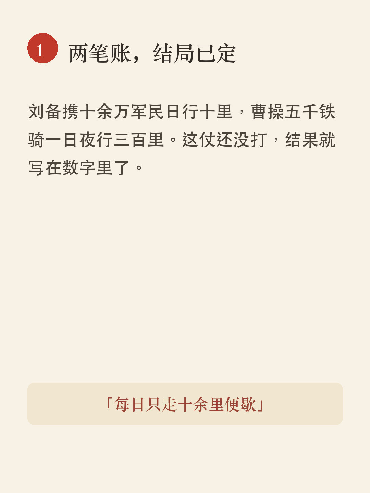
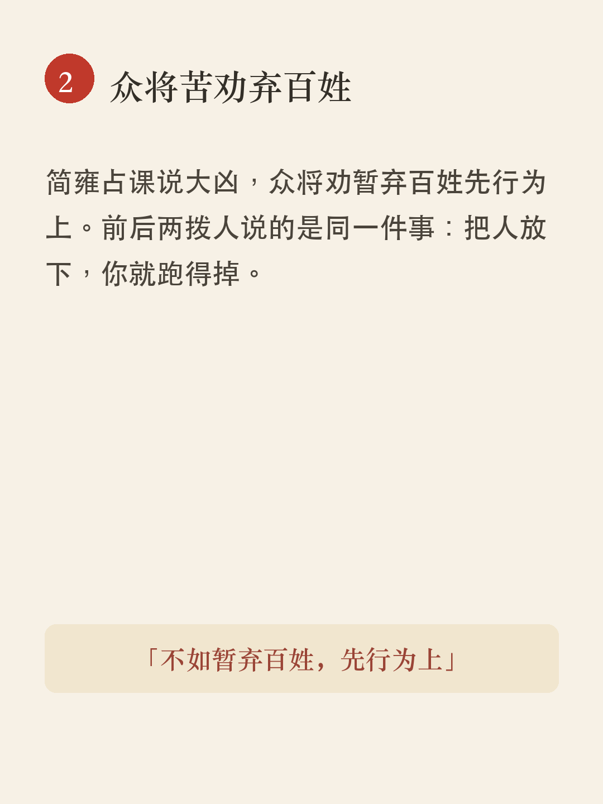
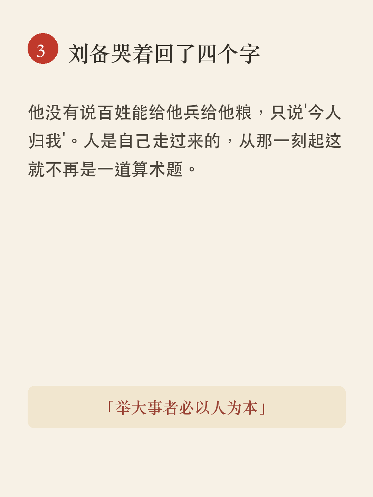
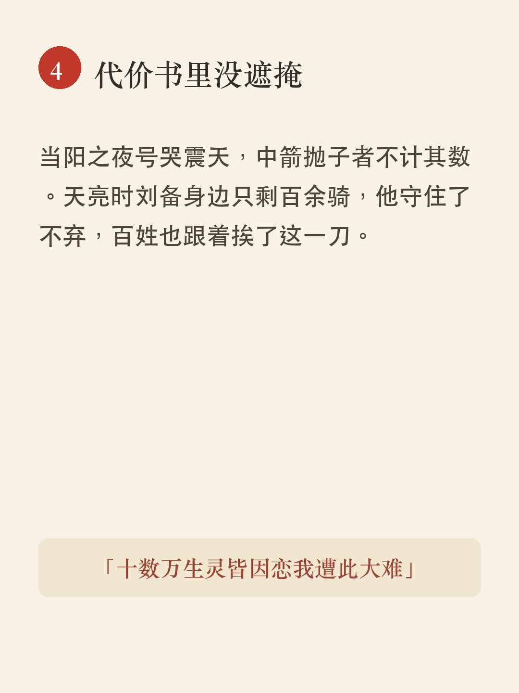
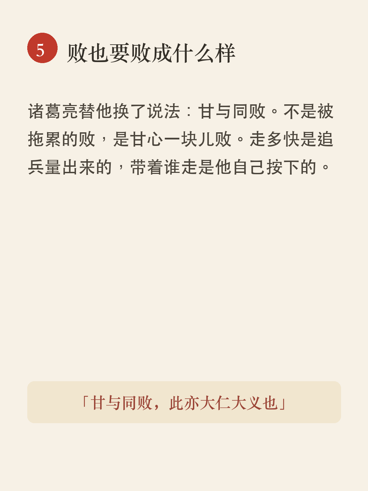
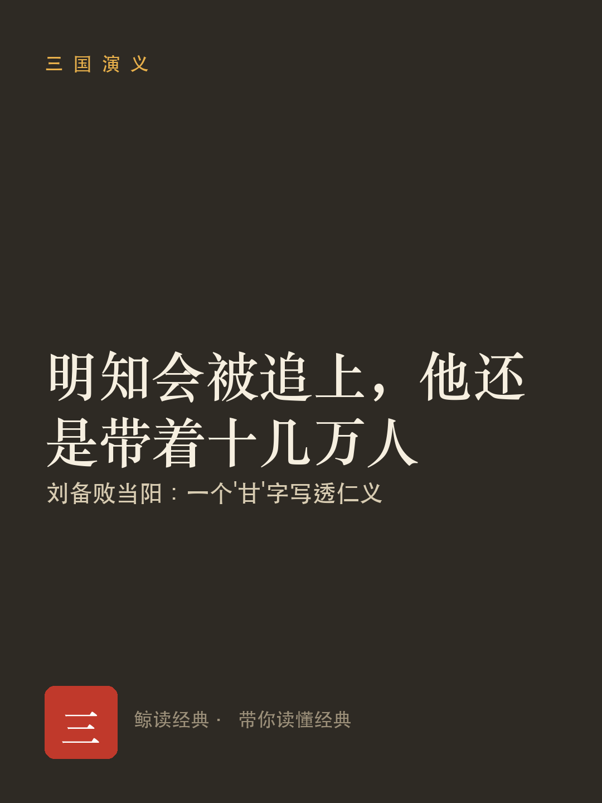
📄 配文·钩子（不剧透）
日行十里对三百里，结局写在数字里——可刘备偏偏选了那个最慢的走法。＋ 讲透版·自成一体（小红书图文）
携民渡江这段，最容易被读成'仁义'二字就翻篇了。但书里给了两个极其具体的数字：刘备日行十余里，曹操轻骑一日夜行三百里。这不是文学修辞，是行军日志级别的精确。所有人都会算这笔账——众将劝弃百姓，简雍占课说大凶，连诸葛亮后来被张昭当面数落'败当阳、奔夏口、无容身之地'时都没否认败了。他只是把'败'换了个说法：'甘与同败'。要害就在这个'甘'字。不是被拖累的败，不是没辙的败，是明知跑不过那五千铁骑，还是决定带着十几万人一起挨这一刀。刘备的回应也值得细看：'今人归我，奈何弃之。'他没说百姓有用、将来能征兵征粮，只说人已经归到我这儿了。之前在樊城他传话愿意跟的就一起过江，两县百姓齐喊'虽死亦愿随使君'——人是自己走来的，从那一刻起这就不在账本上了。我们日常也做过这道题：放下某个人、某句答应过的话、某件早该撂下的事，你能轻快很多。快慢量得出来，十几里和三百里清清楚楚。可有些东西一旦归到你这儿，它就不在那本账里了。刘备没靠这个选择翻盘，亏空是实打实的。他只是在一个拗不过的局面里，决定了自己败成什么样子。
口播稿全文
大家好，我是鱼儿。
一天挪十几里，一昼夜赶三百里。这两个数字摆在一起，仗还没打，结果就已经出来了。
慢的那边是刘备。书里写得很具体：跟着他走的军民十余万，大小车数千辆，挑担背包的数不清，「每日只走十余里便歇」。快的那边是曹操。探马把账算到了他面前：刘备带着百姓，一天只走十几里，两边隔着三百余里。曹操从各部里挑出五千铁骑，星夜前进，限他们一天一夜之内追上刘备。后来诸葛亮在江东提起这一段，用的说法是「轻骑一日夜行三百里」。
这笔账，刘备身边的人也会算。众将劝他「不如暂弃百姓，先行为上」。走到当阳，马前刮起一阵狂风，尘土冲天，简雍占了一课，说「此大凶之兆也，应在今夜，主公可速弃百姓而走」。前后两拨人，说的其实是同一件事：把人放下，你就跑得掉。
刘备哭着回了一句：「举大事者必以人为本。今人归我，奈何弃之？」
值得留意的是他的说法。他没有说百姓有用、将来能给他兵、给他粮，他说的是「今人归我」——人已经归到我这儿来了，我怎么能扔下。这话有来处。之前在樊城，他让人在城中传话：曹兵将至，孤城守不住，愿意跟的就一起过江，不愿意的留下。两个县的百姓齐声大喊「我等虽死，亦愿随使君」。人是自己走过来的，从那一刻起，在他这儿，这就不再是一道算得清的题。
代价，书里也没有替他遮掩。当阳那一夜，两县百姓「号哭之声，震天动地」，中箭受伤、抛下孩子逃命的不计其数。张飞横矛立马在长坂桥上拦住追兵，赵云在乱军里怀抱着幼主直透重围。天亮时刘备身边只剩百余骑，他大哭说，「十数万生灵，皆因恋我，遭此大难」。他守住了一个不弃，而这些人也跟着他一起挨了这一刀。
这一败，后来还被人当面数落过。诸葛亮到江东，张昭张口就是：你辅佐的这位，「乃弃新野，走樊城，败当阳，奔夏口，无容身之地」。诸葛亮没有争辩败没败，他只是给这一败换了个说法：「不忍弃之，日行十里，不思进取江陵，甘与同败，此亦大仁大义也。」
要紧的是那个「甘」字。不是被拖累的败，不是没办法的败，是甘心跟他们一块儿败。
这道题，其实我们也做过。手里那笔账常常算得很清楚：把某个人、某句答应过的话、某件早该撂下的事放下，你能轻快很多，也能快很多。快慢是量得出来的，十几里和三百里，清清楚楚。可有些东西一旦归到你这儿来了，它就不在这本账里了。
刘备没有靠这个选择翻盘。他被追上了，亏空是实打实的。他只是在一个自己拗不过的局面里，决定了自己败成什么样子。
回到开头那两个数字。它们确实预告了结局——他跑不过那五千铁骑。可那个「甘」字不在这两个数字里：走多快，是被追兵和车马量出来的；愿意带着谁一起走，是他自己按下的。
93新版人物thread公版✓ 判官过审神射溫侯，敗在自己人：白門樓之死
🎬 把定夺让出去的人，本事再顶尖也保不住自己。
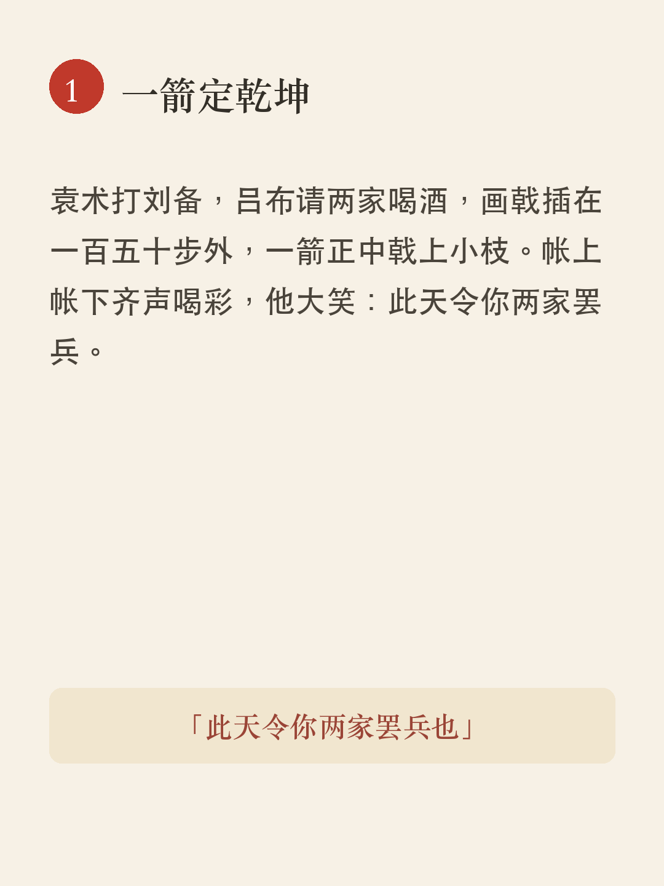
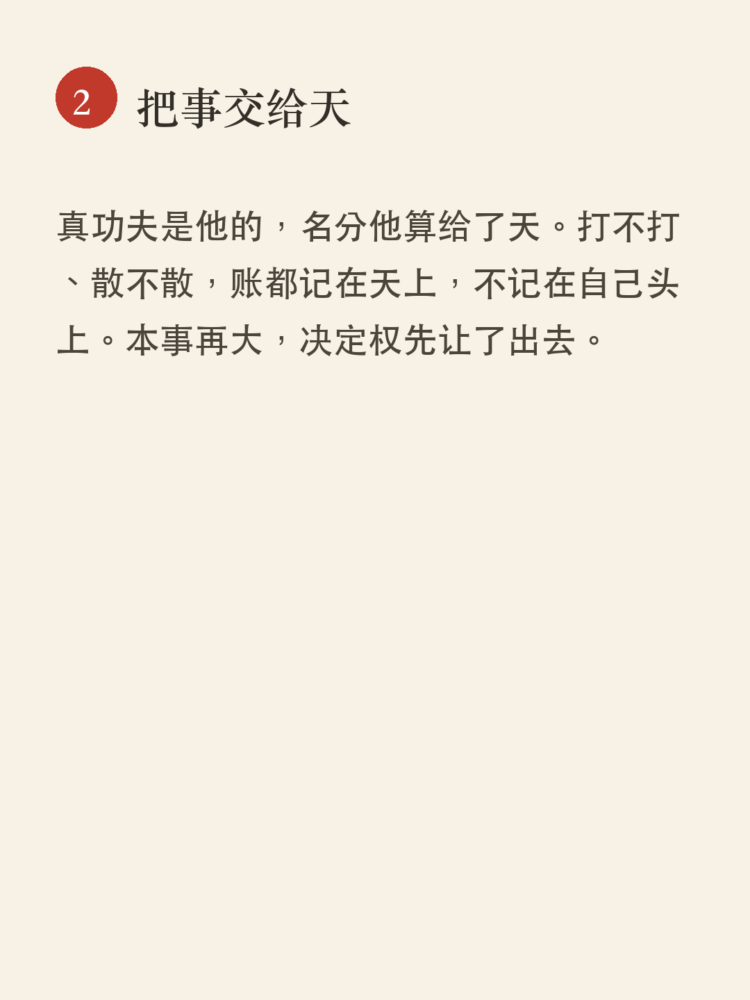
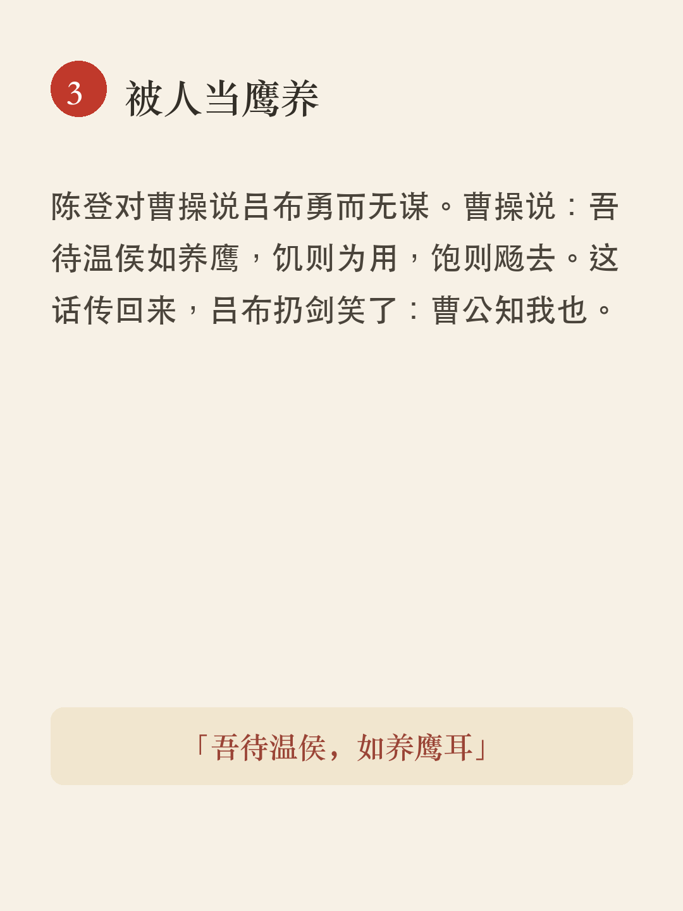
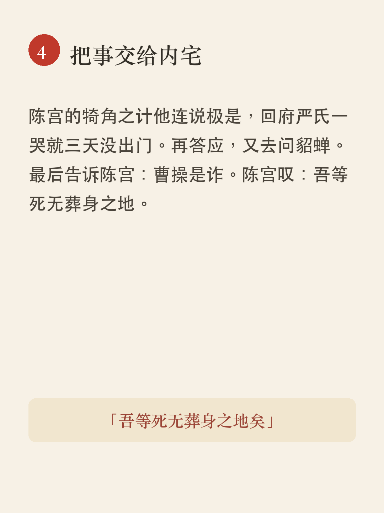
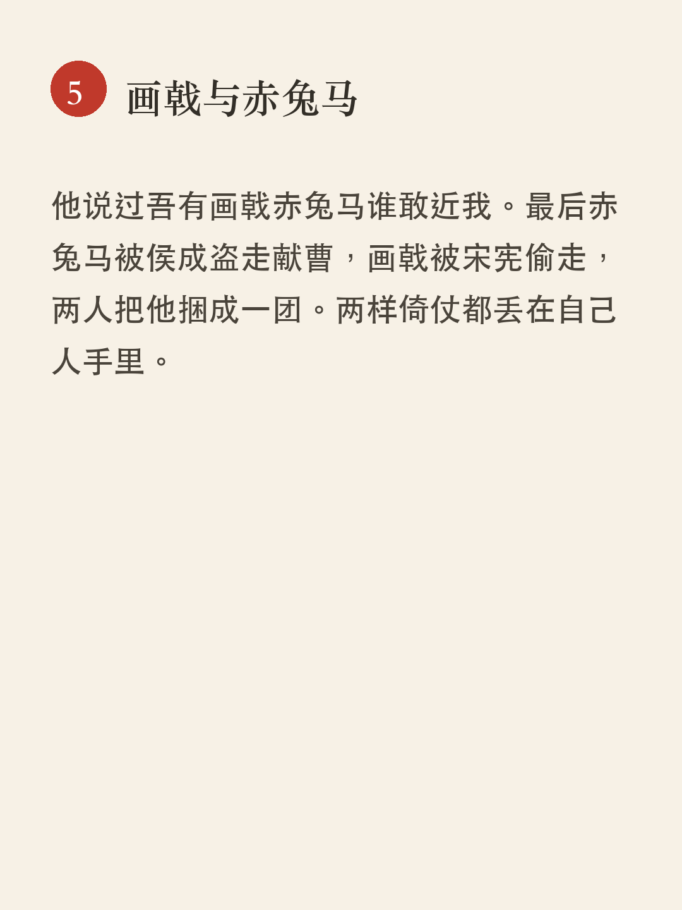
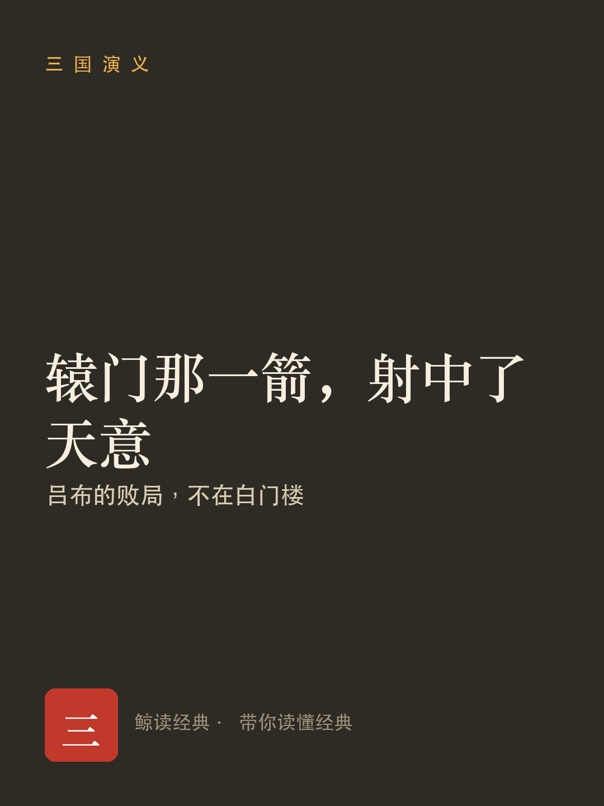
📄 配文·钩子（不剧透）
一百五十步外一箭正中画戟小枝，帐上帐下齐声喝彩——可这一箭的账，他算给了天。＋ 讲透版·自成一体（小红书图文）
辕门射戟那一段，吕布的箭术没话说，一百五十步，正中画戟小枝，满帐喝彩。但真正值得看的是他射完那句话：「此天令你两家罢兵也。」
他把这一箭的功劳算给了天。打不打、散不散，不是他吕布的面子，是天意。本事是自己的，决定权他先交了出去。
这条线往后一拉就通了。陈登私下跟曹操说他「勇而无谋，轻于去就」，曹操接了一句更冷的：「吾待温侯，如养鹰耳，饥则为用，饱则飏去。」这话原样传回徐州，吕布听完把手里的剑一扔，笑了——「曹公知我也。」被人当鹰养着，他听成了懂他。判断力让出去了，别人怎么定义他，他就怎么认。
到下邳被围，陈宫给出犄角之计，他连说「公言极是」，回府严氏一哭就三天不出门。再答应，又进府问貂蝉。最后出来告诉陈宫：曹操说粮草将至，那是诈。陈宫出门叹了一句：「吾等死无葬身之地矣。」——先交给天，再交给内宅。
到最后他守城时下令禁酒，侯成追回被盗的马，众将酿了五瓶酒先送他府上表意，他要斩人，打了五十板才放。宋宪去看侯成，说了一句：「布只恋妻子，视吾等如草芥。」没过几天，侯成盗走赤兔马献曹，宋宪偷走画戟，两人把他捆了。
白门楼上他问：我待诸将不薄，你们何忍背反？宋宪答：听妻妾言，不听将计，何谓不薄？他没有再说话。
被拖走时他冲刘备喊：大耳儿，不记辕门射戟时耶？到最后一刻他能拿出来的凭据，还是那一箭。箭他射得准，但射与不射、算在谁头上、射完往哪走，他一件都没自己认下来。本事可以只属于自己，定夺一让出去，一个人能等的，就只剩别人替他记得。
口播稿全文
大家好，我是小鲸。
一个人的本事再顶尖，也未必救得了他——真正要命的，是他做决定的方式。《三国演义》写吕布怎么走到最后一步，就是这么一条线。
袁术派兵去打刘备驻的小沛，两边阵已经摆开。吕布把两家主将都请进自己帐里喝酒，说他有办法。什么办法？他说：「吾有一法，从天所决。」他让人把自己那杆画戟拿出去，远远插在辕门，也就是军营大门口，然后回头讲条件：「辕门离中军一百五十步，吾若一箭射中戟上小枝，你两家罢兵；如射不中时，各自回营，安排厮杀。」
一百五十步外，箭正中画戟上那根小枝。帐上帐下齐声喝采。他把弓一扔，大笑着拉住两边人的手：「此天令你两家罢兵也！」
这一箭是真功夫。可他给这一箭安的名分是「尽在天命」——打不打、散不散，账都记在天上，不记在他自己头上。
隔着那张桌子，别人看见的并不是神射。后来他派去许都办事的陈登，私下对曹操评了他一句：「吕布豺狼也，勇而无谋，轻于去就，宜早图之。」有勇没算计，跟谁、离谁都太轻易。曹操接的话更凉：「吾待温侯，如养鹰耳，狐兔未息，不敢先饱。饥则为用，饱则飏去。」曹操嘴里的温侯就是他——饿着才肯出力，喂饱就飞了，一只鹰而已。更要紧的是后面这一下：陈登把这话原样带回徐州，吕布听完，把手里的剑一扔，笑了：「曹公知我也！」被人当鹰养着，他听成了懂他。
再往后，曹操围下邳。陈宫给他出了个法子：他带步骑驻到城外，陈宫守城里，曹操打他，城里就出兵抄背后；曹操攻城，他从外面救。吕布说「公言极是」，回府就收拾行装。妻子严氏一哭，问他人一走，城里靠谁守，他就犹豫住，三天没出门。陈宫再劝，他又答应，又进府里说，严氏又哭，他愁闷得定不下来，转身去问他的妾貂蝉。最后出来告诉陈宫：曹操说粮草要到，那是诈。陈宫出门叹了一句：「吾等死无葬身之地矣！」
先把事交给天，再把事交给内宅。到了城里，他交给的是刑罚。曹操决水灌城，他照镜子见自己被酒色所伤，当天下令城中「但有饮酒皆斩」。部将侯成追回被盗走的马，众将来道贺，酿了酒不敢喝，先送五瓶到他府上表个意思。他要斩，众将跪着求，他说：「故犯吾令，理合斩首。今看众将面，且打一百！」众将再求，打了五十板，背上开花，才放回来。书里紧接着一句：「众将无不丧气。」
宋宪去侯成家看他，说的是：「布只恋妻子，视吾等如草芥。」没过几天，侯成盗走他倚仗的那匹赤兔马，献给了曹操。他在城楼上从平明打到日中，累了，坐在椅子上睡着——宋宪赶退左右，先把他的画戟盗走，再和魏续一起动手，把他捆成一团。他从前是拍着胸口说过的：「吾有画戟，赤兔马，谁敢近我？」这两样，最后都被自己人拿走了。
白门楼上，他看见侯成、魏续、宋宪都站在旁边，问：「我待诸将不薄，汝等何忍背反？」宋宪答他：「听妻妾言，不听将计，何谓不薄？」他没有再说话。
他还想活。他冲曹操喊：「公为大将，布副之，天下不难定也。」曹操没有当场答，回头问了刘备一句：「何如？」刘备答：「公不见丁建阳、董卓之事乎？」曹操这才令人把他牵下楼去。他被拖走时回头冲刘备喊：「大耳儿！不记辕门射戟时耶？」
到最后一刻，他能拿出来的凭据，还是辕门外那一箭。那一箭他射得准；可射与不射、算在谁头上、射完往哪走，他一件都没自己认下来——先记在天上，最后记在别人的记性里。本事可以只属于自己；定夺一让出去，一个人能等的，就只剩别人替他记得。
92新版映照scene公版✓ 判官过审誓刚发完，头一件难事是没有马
🎬 昨天还在跟天地说不求同年同月同日生，但愿同年同月同日死；第二天收拾军器，书里只写了一句：但恨无马匹可乘。
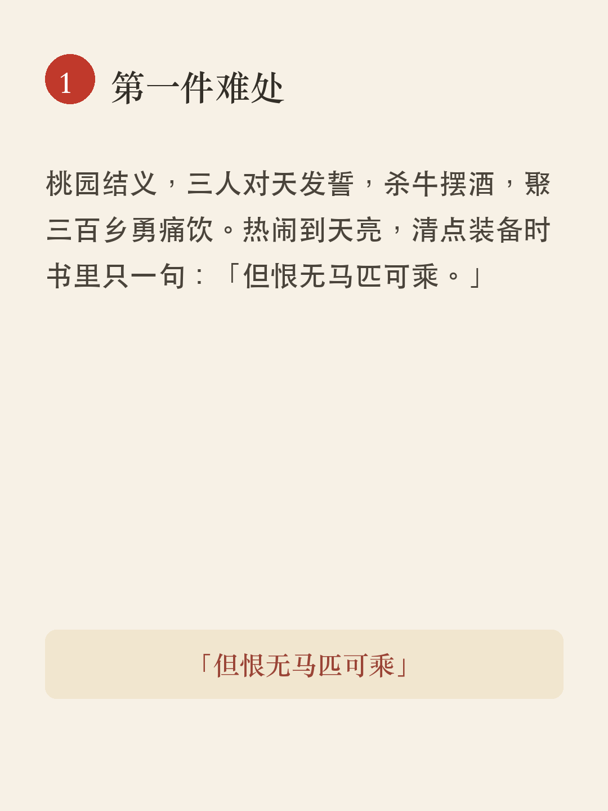
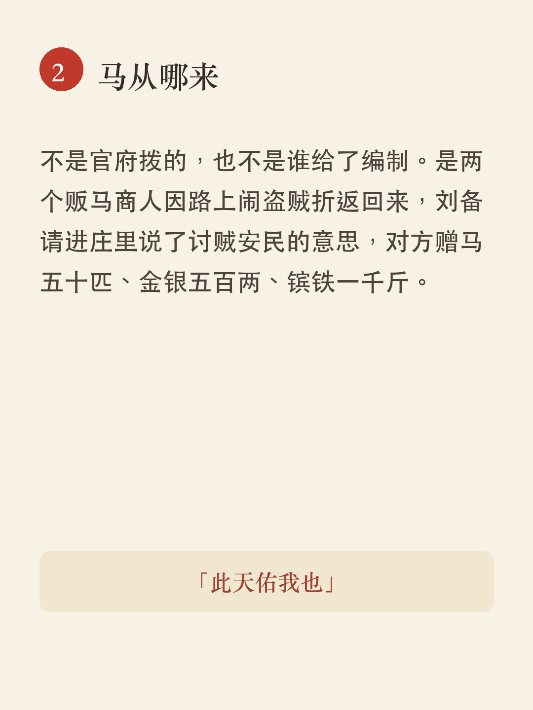
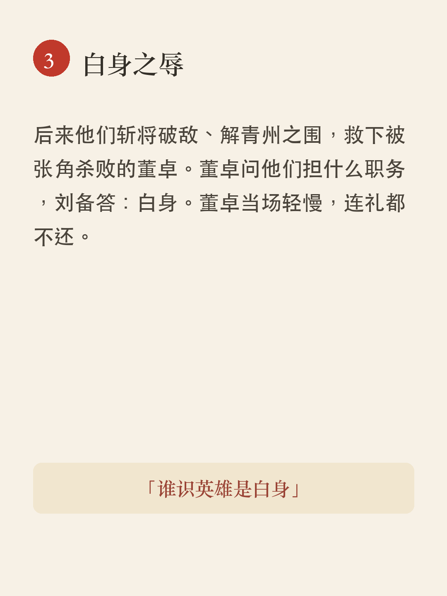
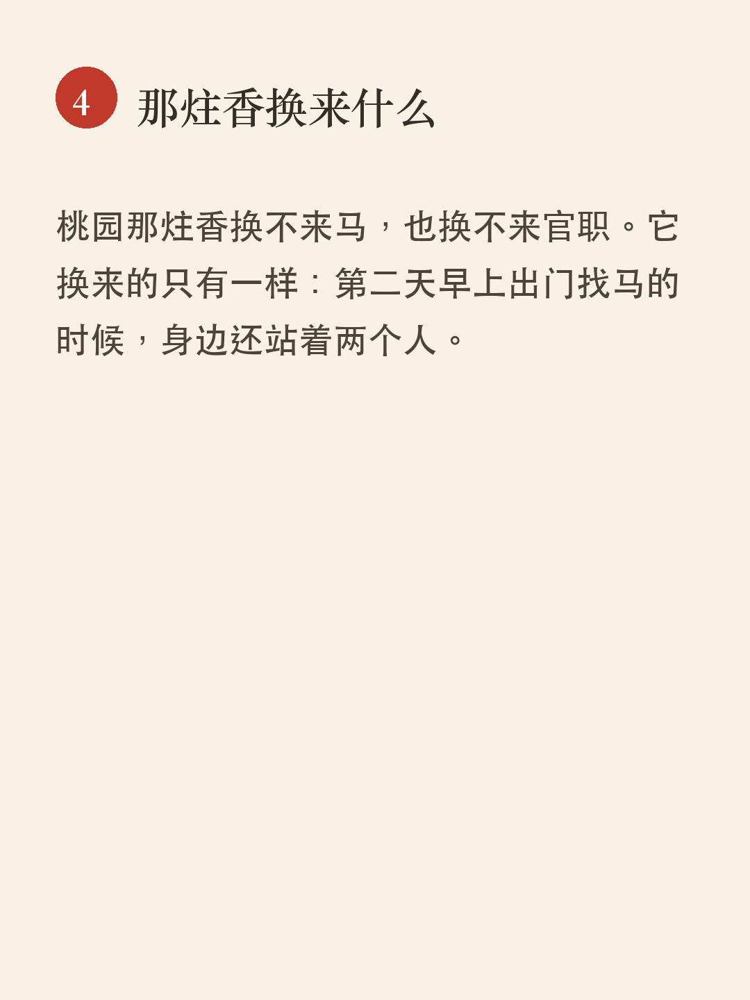
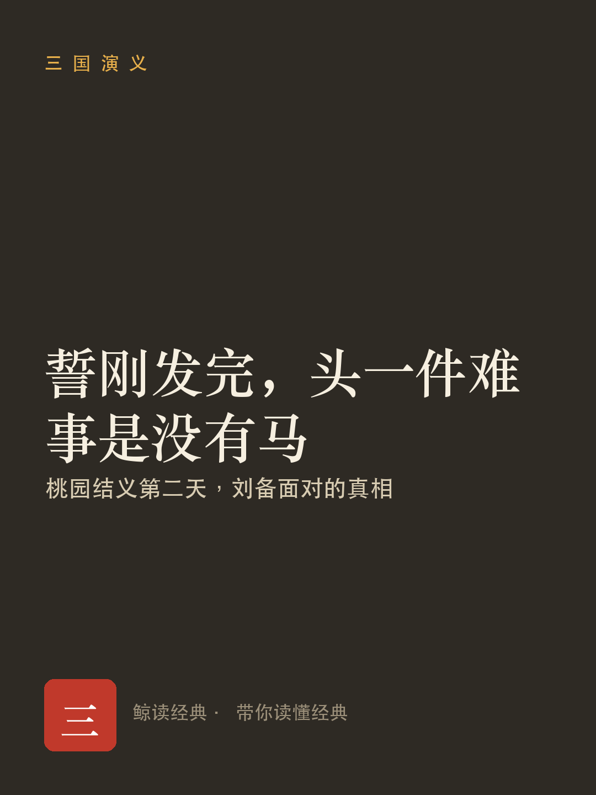
📄 配文·钩子（不剧透）
桃园里三个人对天地发完誓，第二天收拾家伙，书里冷冷给了一句——「但恨无马匹可乘」。＋ 讲透版·自成一体（小红书图文）
《三国演义》开篇写桃园结义，誓言是对着皇天后土说的，「不求同年同月同日生，但愿同年同月同日死」，杀牛摆酒，三百乡勇痛饮一场。热闹到这儿为止。
天亮之后清点装备，头一件难处不是黄巾军人多势众，而是没有马。这一笔写得很冷——前一天的话再大，马得有人给。
后来马来了，不是官府拨的，也不是谁看重他们给了编制。是两个中山大商人张世平、苏双，每年往北边贩马，因路上闹盗贼折返回来。刘备把人请进庄，说了讨贼安民的意思，二位赠良马五十匹、金银五百两、镔铁一千斤。有了这些，才打得出双股剑、青龙偃月刀、丈八点钢矛，才凑得齐五百乡勇，才有人引他们去见太守。
一支队伍的起点，是两个生意人临时折返。
后面他们真打赢了，斩将破敌解青州之围，直到救下被张角杀败的董卓。董卓问的第一个问题不是你们仗打得如何，是你们现在担什么职务。刘备答：「白身。」没有官职，没有身份。董卓听完当场轻慢，连礼都不还。书里扔下一句：「人情势利古犹今，谁识英雄是白身？」
这不就是那种早晨吗——几个人把一件事拍板，散场时心是烫的，第二天起来第一件要解决的事特别不体面：钱、设备、场地、一辆能开的车。前一晚的心气一样也换不出来。真正把事往前推一步的，可能只是某个恰好路过、恰好愿意搭把手的人。
再往后还会遇上董卓那种问法：你做成过什么先放一边，对方先要知道你挂在哪儿、什么头衔。答不上来，脸色当场就变。
书里没有替刘备讨这个公道，也没写他因此把誓收回去。桃园那炷香，换不来一匹马，也换不来一个官职。它能换来的只有一样：第二天早上要出门找马的时候，身边还站着两个人。
口播稿全文
大家好，我是鱼儿。
一群人下定决心要干一件大事，第二天早上最先卡住的，常常不是敌人，是一件很小的东西。
《三国演义》开篇就把这个落差写出来了。桃园里三个人对着天地把誓发完，第二天收拾家伙，书里只给了一句：「来日收拾军器，但恨无马匹可乘。」
发的是什么誓？「不求同年同月同日生，但愿同年同月同日死。皇天后土，实鉴此心。背义忘恩，天人共戮。」拜完，又杀牛摆酒，聚起乡里三百多条汉子，在桃园痛饮一场。
热闹到这儿为止。天亮之后清点装备，头一件难处不是黄巾军人多，而是没有马。
这一笔写得很冷。前一天的话是对着皇天后土说的，马却得有人给。
那批马后来是怎么来的？不是官府拨的，也不是谁看重他们、给了个编制。是两个贩马的商人赶着一群马路过庄上。中山的大商人张世平和苏双，每年往北边贩马，那阵子因为路上闹起了盗贼折返回来。刘备一听有马来了，说「此天佑我也！」便把人请进庄里摆酒，说了自己想讨贼安民的意思。两位客人高兴，「愿将良马五十匹相送；又赠金银五百两，镔铁一千斤，以资器用。」
一支队伍的起点，是两个生意人临时折返回来。有了这些马、这笔钱、这些铁，才打得出刘备的双股剑、关羽那把八十二斤的青龙偃月刀、张飞的丈八点钢矛，才凑得齐五百多乡勇，才有人肯引着他们去见太守。
后面他们是真打赢了。斩将、破敌、解青州之围，一路真刀真枪。直到有一回，他们冲上去救下了被张角杀败的朝廷将领董卓。董卓问的，是他们现在担着什么职务。刘备答的是：「白身。」——没有官职，没有身份，就是个平头百姓。董卓听完就轻慢他们，连礼都不还。书写到这里，扔下一句：「人情势利古犹今，谁识英雄是白身？」
你发现没有，这不就是我们常有的那种早晨吗。
几个人坐在一起，把一件事拍板下来，谁做什么、往后怎么走，讲得清清楚楚，散场的时候心是烫的。第二天起来，第一件要解决的事往往特别不体面：钱、设备、场地、一辆能开的车。前一晚的心气，一样也换不出来。真正把事往前推一步的，可能只是某个恰好路过、恰好愿意搭一把手的人。
再往后你还会遇上董卓那种问法。你做成过什么先放一边，对方要先知道你现在挂在哪儿、是什么身份。答不上一个像样的头衔，对方的脸色当场就变了。
书里没有替刘备讨这个公道，只留下那句诗。也没写他因此就把誓收回去。
桃园那炷香，换不来一匹马，也换不来一个官职。它能换来的只有一样：第二天早上要出门找马的时候，身边还站着两个人。
92新版洞见scene公版✓ 判官过审嘉德殿废少帝：不是打仗，是按策文解璽綬的一场仪式
🎬 换掉一个皇帝不必打仗——流程越齐整，越要看旁边有没有拔出的剑
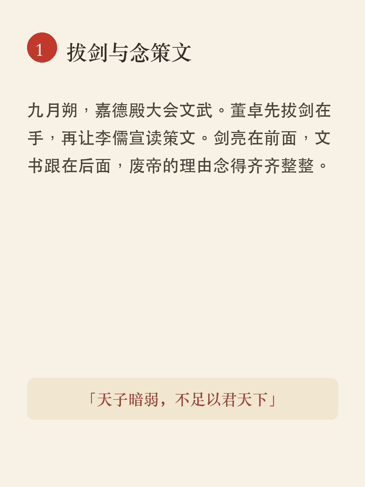
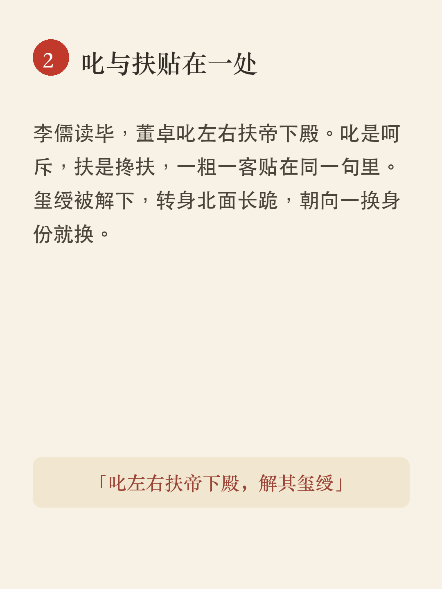
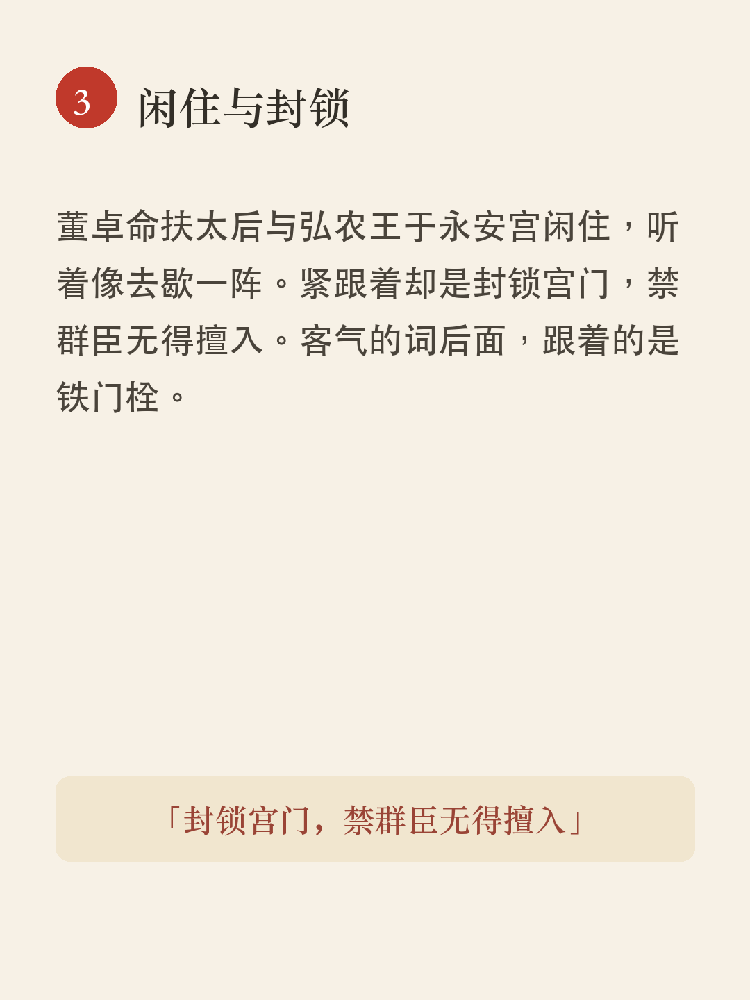
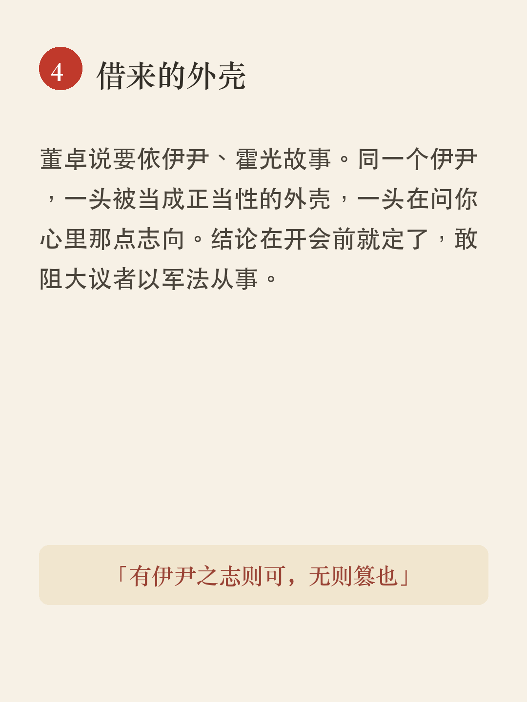
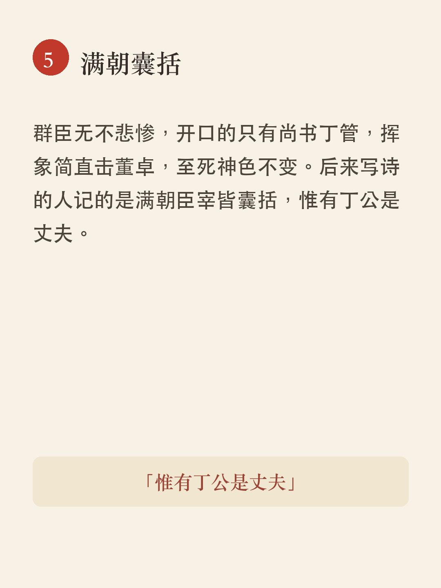
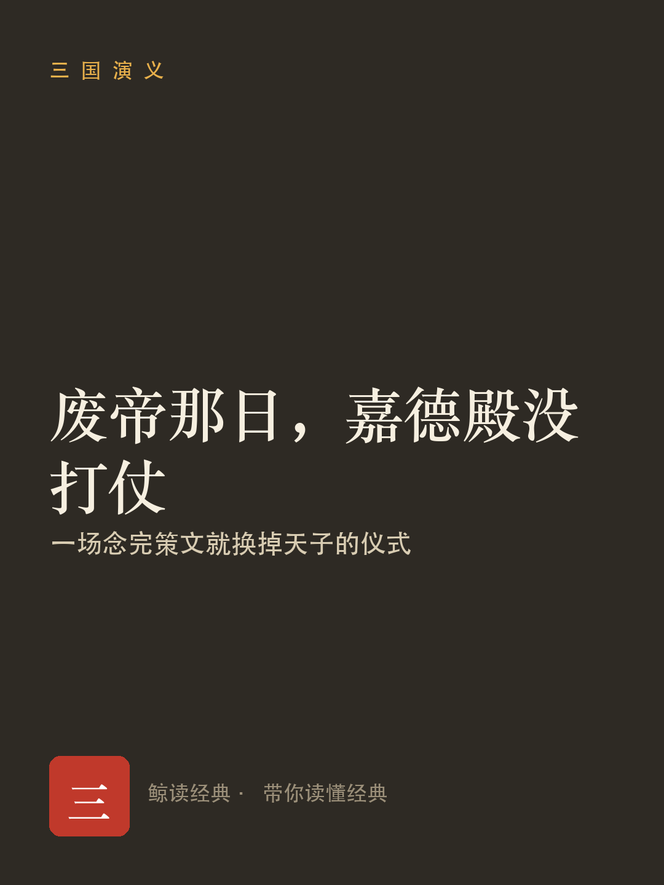
📄 配文·钩子（不剧透）
嘉德殿上换掉一个皇帝，全程没动一兵一卒，只念了一道策文、走了一套礼数——但董卓的头一个动作，是拔剑。＋ 讲透版·自成一体（小红书图文）
《三国演义》写董卓废少帝，日子挑在九月朔，地点嘉德殿，大会文武。原著记得很细：董卓拔剑在手，然后才开口说有策文一道宜为宣读。李儒念完罢帝立王的理由，董卓叱左右扶帝下殿，解其玺绶，北面长跪，称臣听命。叱是呵斥，扶是搀扶，一粗一客贴在同一句里——皇帝是被扶着走的，礼数一样不缺，但玺绶解了，朝向换了，身份就换了。董卓又命扶何太后与弘农王于永安宫闲住，闲住听着像歇一阵，紧跟的却是封锁宫门、禁群臣擅入。这一套走得顺，是因为结论在会前就定了：敢有阻大议者以军法从事，群臣震恐，一听尊命。董卓还借了卢植当面说的话，说要依伊尹、霍光故事——同一个伊尹，一头被当外壳，一头在问志向。满殿沉默里只有尚书丁管挥象简直击董卓，骂至死神色不变。后来写诗记这天的人没记礼数走得多齐，记的是满朝臣宰皆囊括、惟有丁公是丈夫。囊括是把话都收进袋里。一件事被装进流程，念得齐齐整整，人就容易当成正当的。值得看的不是文书写得多得体，是文书旁边有没有一把已经拔出来的剑，还有那屋里谁被允许开口。
口播稿全文
大家好，我是小鲸。
换掉一个皇帝，可以不用打仗。《三国演义》里就有这么一场：一份文书念完，皇帝就换了。
原著写得很细。书里记的日子是「九月朔」，也就是九月的头一天，把皇帝请上嘉德殿，「大会文武」。董卓的头一个动作不是说话，是「拔剑在手」，然后才开口：「天子暗弱，不足以君天下。今有策文一道，宜为宣读。」文书交给李儒念，念的是罢的理由和继位的人：「兹废皇帝为弘农王，皇太后还政。请奉陈留王为皇帝，应天顺人，以慰生灵之望。」
念完是一串动作，书里只用一句话交代：「李儒读策毕，卓叱左右扶帝下殿，解其玺绶，北面长跪，称臣听命。」
留意挨在一起的两个字。“叱”是呵斥，“扶”是搀扶，一个粗，一个客气，贴在同一句里。皇帝是被“扶”下殿的，礼数一样不缺；下来之后玺绶被“解”掉，像解下一件随身的东西。再转过身朝北跪着，说一句听命——原著把这个朝向和“称臣”写在一处，跪的方向一换，身份就换了。
那个客气的“扶”字，隔几行又来了一次。董卓「命扶何太后并弘农王及帝妃唐氏于永安宫闲住」——“闲住”，听着像去歇一阵；紧跟着的一句却是「封锁宫门，禁群臣无得擅入」。
这一整套能顺顺当当走下来，是因为结论在开会之前就定了。之前那场宴上，董卓把话摆在了前头：「敢有阻大议者，以军法从事。」底下的反应是「群臣震恐」，一屋子人都答「一听尊命」。说法也是借来的。卢植曾当着他的面把伊尹、霍光的旧例摊开，说他「无伊、霍之大才」，还引了一句「有伊尹之志则可，无伊尹之志则篡也」；后来董卓自己把这套说法拿去用，说要「依伊尹、霍光故事」。同一个伊尹，一头被当成外壳，一头是在问你心里那点志向。
所以那天嘉德殿上短缺的不是兵，是出声的人。「帝后皆号哭。群臣无不悲惨」——难受是真的，开口的只有尚书丁管，「挥手中象简，直击董卓」，骂到「至死神色不变」，结局是「卓命牵出斩也」。会照旧往下开：请陈留王登殿，群臣朝贺，「改元初平」。接位的那位「时年九岁」。而董卓替自己拿到的待遇里，有一条是「剑履上殿」——一件靠礼节办成的事，末尾发的赏是可以不守礼节。
书里收这一段的话是「可怜少帝四月登基，至九月即被废」。这句里没提到一场仗。
这套办法今天也不算陌生。一件事被装进流程里，念得齐齐整整，人就容易把它当成正当的。值得看的不是文书写得多得体，而是文书旁边有没有一把已经拔出来的剑，还有那屋里谁被允许开口。
那天确实没有打仗。可后来写诗记这一天的人，没记礼节走得多齐，记的是「满朝臣宰皆囊括，惟有丁公是丈夫」。囊括，是把话都收进袋里。满殿人的沉默，被这场仪式一起算了进去；而一个人不肯沉默，也一起留了下来。
92新版故事scene公版✓ 判官过审追兵就在耳边，她说了四个字
🎬 一堵被火烧坏的土墙，一口枯井，一个左腿中枪走不动的女人，怀里抱着孩子。
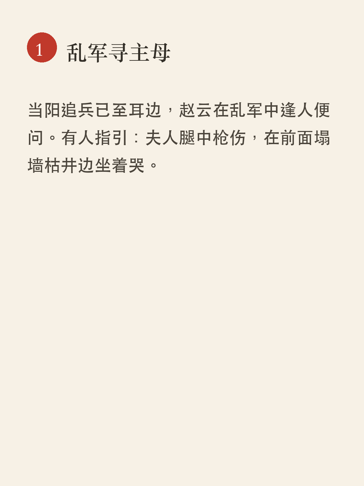
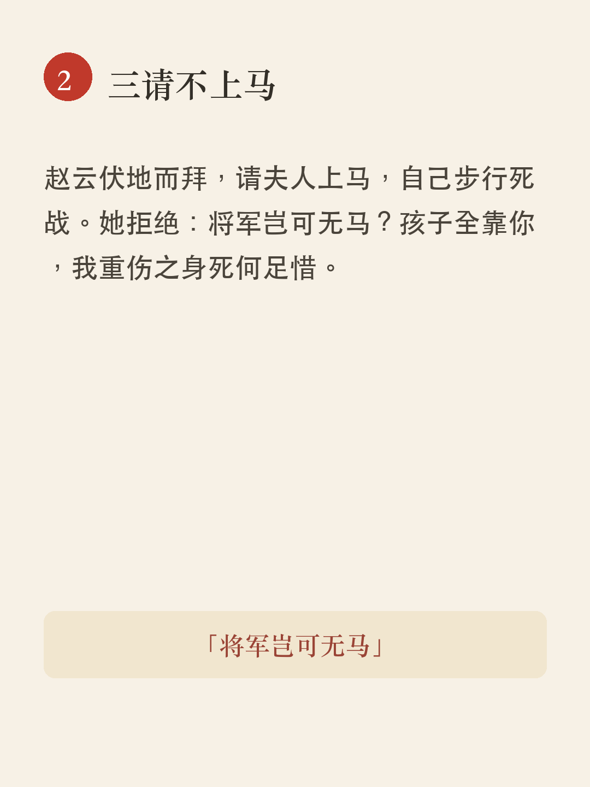
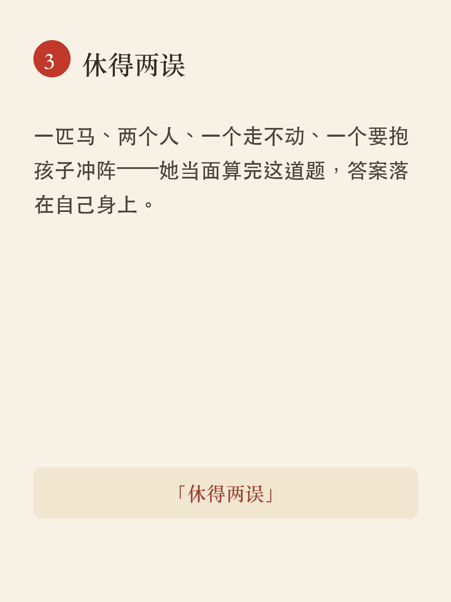
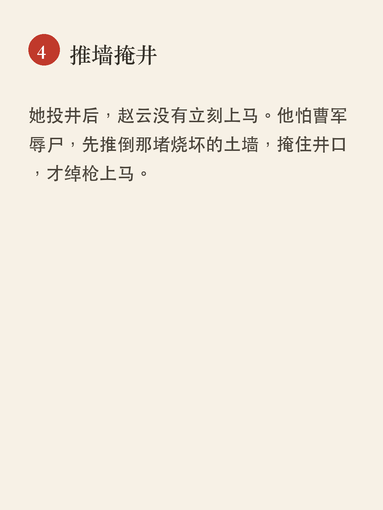
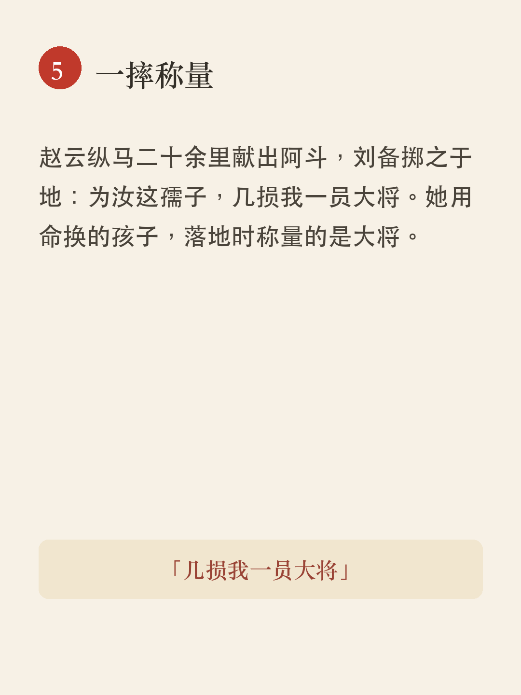
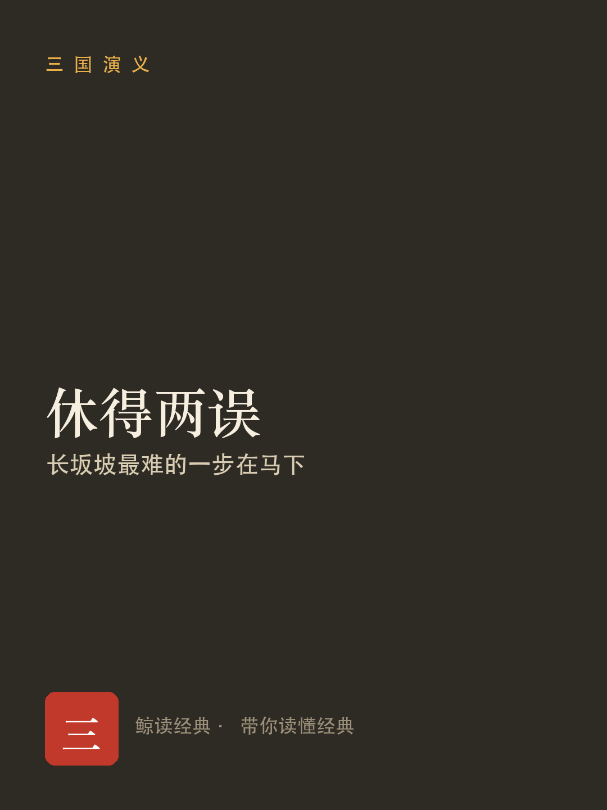
📄 配文·钩子（不剧透）
长坂坡追兵到了耳边，她只留给赵云四个字，然后翻身投入枯井。＋ 讲透版·自成一体（小红书图文）
长坂坡这一场突围，人人记得赵云七进七出、血满征袍。但真正难的一步不在马上，在马下。
糜夫人腿中枪伤，坐在塌墙枯井边。赵云三回五次请她上马，她不肯。不是意气用事，是她当面把这道题算了一遍：一匹马，战将步行怎把幼君扶？两个人一起搭上去，谁也走不出去。答案只能落在一个人身上。她说了四个字——「休得两误」——别误将军，别误孩子。四个字里没有一个字提自己。然后她把阿斗放在地上，翻身投井。
书里接下来那一笔很容易被跳过：赵云没有立刻上马。他怕曹军辱尸，先把那堵火烧坏的土墙推倒，掩住枯井，这才解甲带、放掩心镜、抱孩子、绰枪上马。后面砍旗夺槊的所有画面，起点是这口被土盖住的井。
更冷的一笔在后面。赵云纵马二十余里，把孩子递给刘备。刘备接过来掷之于地：「为汝这孺子，几损我一员大将。」她用一条命换出来的孩子，落地那一刻，被称量的是一员大将的分量。原书没有替她再多说一个字，只留着那口井。
后来讲长坂坡，讲的全是马上那一骑。但让那一骑跑得动的，是马下这四个字，和一堵推倒下来盖住井口的土墙。
口播稿全文
大家好，我是鱼儿。
这场千古有名的突围，真正难的一步不在马上，在马下，而且只用了四个字。
当阳，追兵已经到了耳边。赵云一个人在乱军里找主母，逢人就问。有人指给他：「夫人抱着孩儿，左腿上着了枪伤，行走不得，只在前面墙缺内坐地。」
他赶过去，看见的是这么一个地方：一户人家，土墙被火烧坏了，墙下一口枯井，一个女人抱着孩子，坐在井边哭。
赵云下马，伏地而拜。他开口第一件事是请她上马——马给她，他自己步行死战，护她杀出重围。
她说：「不可。将军岂可无马？」孩子全靠他保护，她自己已经重伤，死何足惜。
赵云再请：「喊声将近，追兵已至，请夫人速速上马。」
她答道“妾身委实难去”，最后留给赵云的，就是那四个字：“休得两误。”
两误，是两头都误了。一匹马，两个人，一个走不动，一个抱着孩子还要冲阵，一起搭上去，谁也走不出去。这道题她当着赵云的面算了一遍，答案落在自己身上。然后她把阿斗递过去，说：「此子性命全在将军身上！」
书里写得很实：赵云三回五次，请夫人上马，夫人只不肯上马。四面喊声又起。他急了，厉声问她：追军若至，为之奈何？她的回答是把阿斗放在地上，翻身投入枯井。
紧接着，书中引后人诗赞之，头两句正好就是她刚算完的那道题：「战将全凭马力多，步行怎把幼君扶？拚将一死存刘嗣，勇决还亏女丈夫。」马力是战将的命，人步行着，怎么可能把幼主带出去。末句“勇决还亏女丈夫”点明糜夫人的决断。
再下来那一笔，容易被跳过，分量却很重。赵云没有立刻上马。他怕曹军辱尸，先把那堵被火烧坏的土墙推倒，掩住枯井；这才略解甲带，放下掩心镜，把孩子抱在怀里，绰枪上马。
后面那些人人都记得的画面——砍倒大旗两面，夺槊三条，血满征袍——起点就是这口被土盖住的井。
赵云纵马过桥，行了二十余里，见刘备与众人憩于树下。把孩子递给刘备。刘备接过来，掷之于地，说：「为汝这孺子，几损我一员大将！」赵云忙从地上抱起阿斗。书中引后人诗叹这一摔：「无由抚慰忠臣意，故把亲儿掷马前。」她用命换出来的那个孩子，落地的时候，被称量的是一员大将。原书没有替她再多说什么，只留着那口井。
“休得两误”这四个字里，一个字都没提她自己：别误了将军，别误了孩子。后来讲这一段，讲的都是马上那一骑；让这一骑跑得动的，是马下的这四个字，和一堵推倒下来盖住井口的土墙。
90新版洞见thread公版✓ 判官过审盟誓那天大家都哭了，眼泪是真的
🎬 眼泪能证明心意，却管不住粮怎么给、功怎么算、东西归谁。
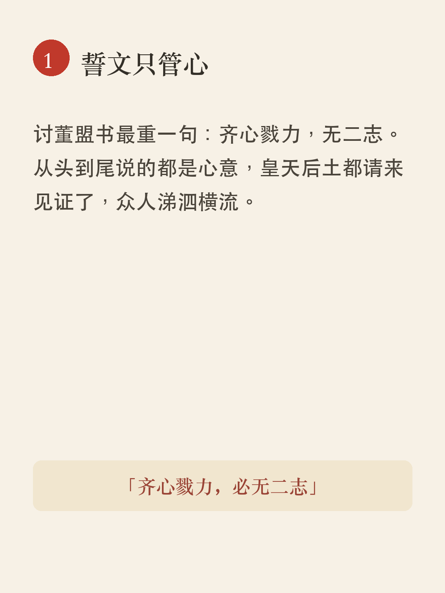
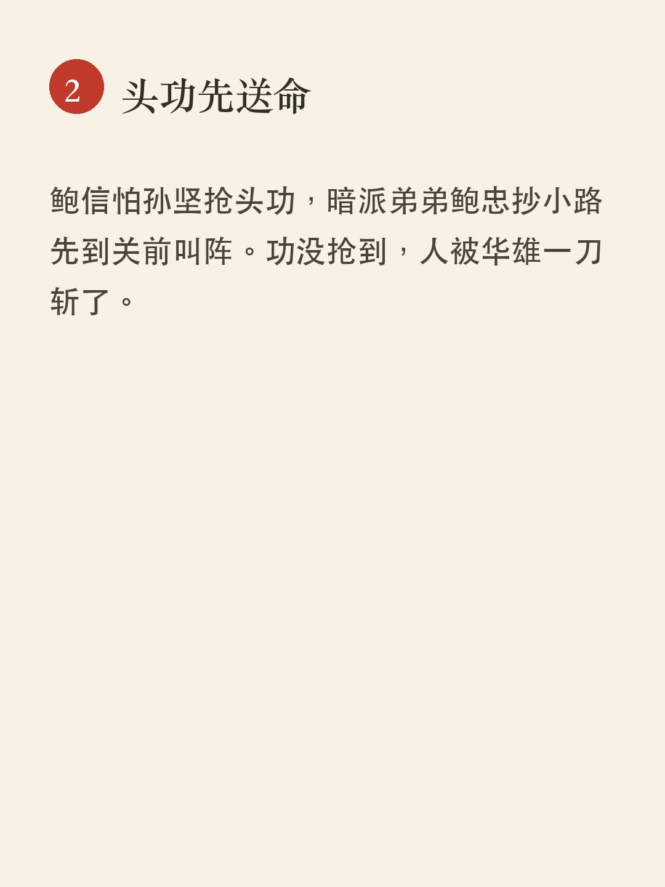
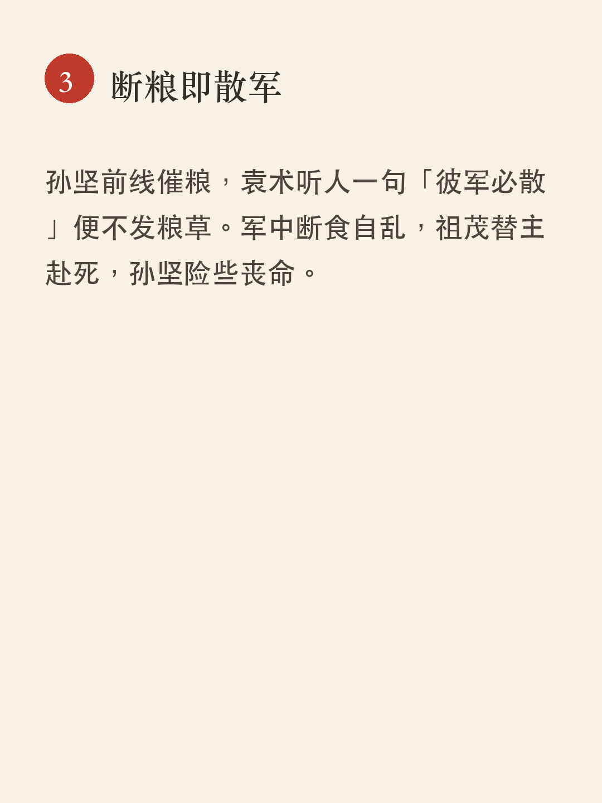
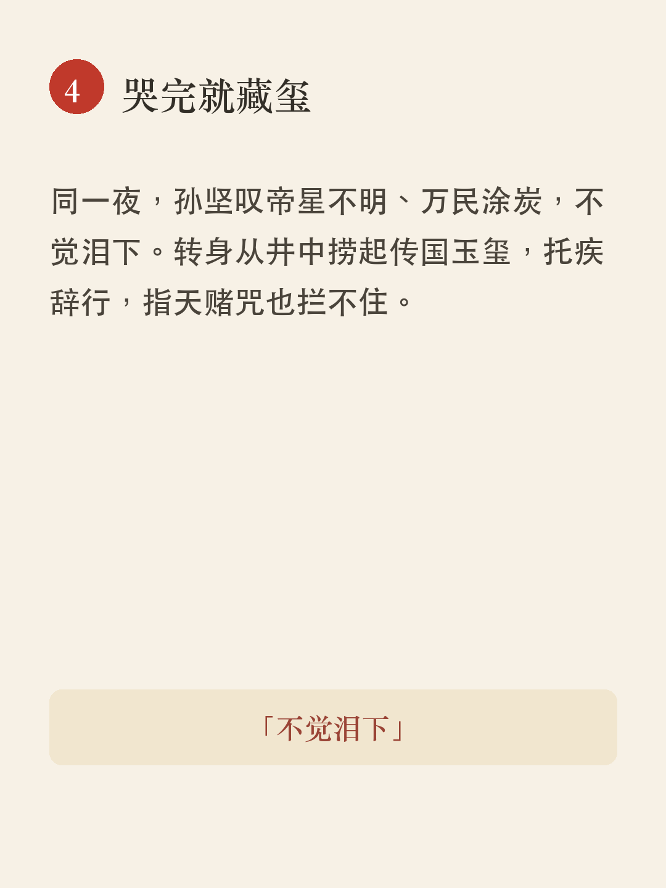
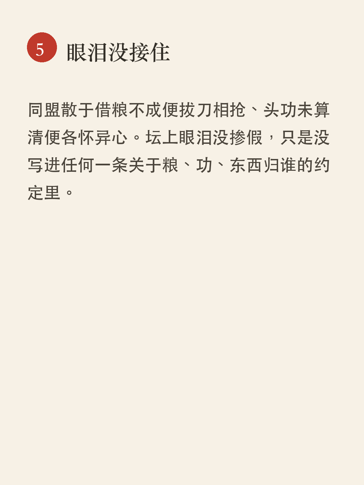
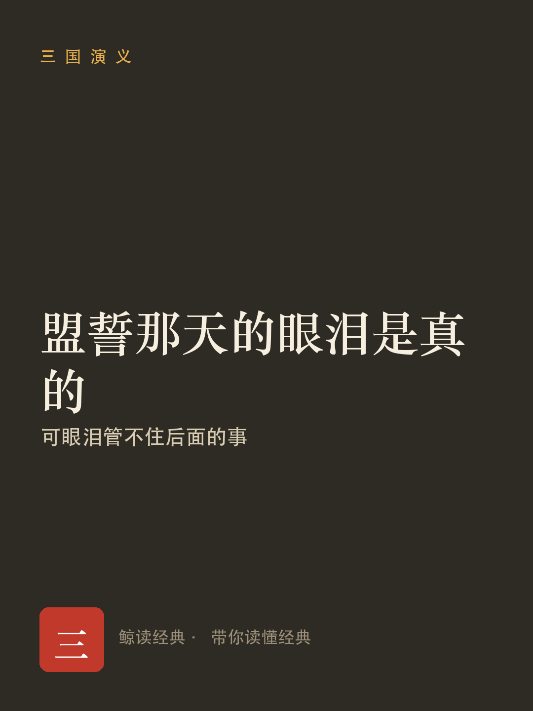
📄 配文·钩子（不剧透）
筑台三层，焚香歃血，满帐涕泗横流——可后来拆散这群人的，是一批没发出去的粮草和一只从井里捞上来的锦囊。＋ 讲透版·自成一体（小红书图文）
《三国演义》里十八路诸侯讨董卓，袁绍被推为盟主，筑台三层，整衣佩剑，焚香再拜。盟书里最重的一句是「齐心戮力，以致臣节，必无二志」，末了还请皇天后土、祖宗明灵来做见证。读罢歃血，众人涕泗横流。
这份誓约管的全是心里的事：齐心、戮力、无二志。
可后来把这个同盟拆开的关键，没有一件在心里。
鲍信怕孙坚夺头功，暗地里派弟弟鲍忠三千人马抄小路抢先到关前叫阵——头功没抢到，人被华雄手起刀落斩于马下。孙坚在前线打仗，派人回袁术处催粮。有人劝袁术不发粮，说「孙坚乃江东猛虎」「今不与粮，彼军必散」，袁术就真的断了粮草。军中断食自乱，当夜华雄劫寨，部将祖茂替孙坚戴上赤帻引开追兵，被一刀砍死。
最见分寸的是孙坚。扑灭宫中余火那一夜，他按剑露坐，仰观天文，叹「帝星不明，贼臣乱国，万民涂炭」，不觉泪下。就在同一个晚上，军士从井里捞出一具妇人尸首，项下锦囊装着传国玉玺。程普劝他速回江东别图大事，他答「汝言正合吾意」，转天托疾辞行。哭是真的，藏也是真的，挨在同一个人同一个夜里，一点不打架。
袁绍拦着要玉玺，孙坚指天赌咒：若私藏此宝，异日不得善终、死于刀箭之下。同样是发誓，坛上能让满帐落泪，到这儿却连一句话也担保不住。两边拔剑对峙，颜良文丑出鞘，程普黄盖掣刀。
再往后就是散。曹操见众人各怀异心，自引军投扬州；公孙瓒拔寨北行；刘岱向乔瑁借粮不成，直接引军突入营中杀了乔瑁，人马尽数收编——同盟里头借不来粮，就开抢。
所以一屋子人被同一句话说哭的时候，那眼泪可以信，却还不够让人放心。真正决定一群人能走多远的，是粮怎么给、功怎么算、拿到的东西归谁——这些有没有事先讲明白。那篇誓文请了皇天后土来鉴，可最后判这份盟约的，是一批没发出去的粮草、一个抢在前头的头功、一只从井里捞上来的锦囊。坛上那场眼泪没有掺假，它只是没被写进任何一条关于粮、关于功、关于东西归谁的约定里——于是落下来的时候，什么也没接住。
口播稿全文
大家好，我是小鲸。
一群人被同一件事感动到当场落泪，这眼泪多半是真的。可眼泪能证明的只是那一刻的心意，它管不住接下来那些具体的事。
《三国演义》里有一场，把这中间的距离写得特别清楚。
讨董的诸侯推袁绍做盟主，筑台三层，袁绍整衣佩剑上去，焚香再拜。盟书里最重的一句是——「凡我同盟，齐心戮力，以致臣节，必无二志」，末了还把天地祖宗都请了来做见证：「皇天后土，祖宗明灵，实皆鉴之！」读罢，歃血，书里紧接着写：「众因其辞气慷慨，皆涕泗横流。」
留意一下这份誓约管的是什么：齐心、戮力、无二志——从头到尾说的都是心。
而后来把这个同盟拆开的，关键不在心里的事。
孙坚被点作前部先锋，济北相鲍信怕他把头功夺了，暗地里拨给自己的弟弟鲍忠三千马步军，抄小路抢先到关下叫阵——被华雄手起刀落，斩于马下。抢一个头功，先把自家兄弟抢没了。
孙坚打到关前，派人回袁术处催粮。有人劝袁术勿发粮，说「孙坚乃江东猛虎」，又说「今不与粮，彼军必散」，袁术就真的不发粮草。书里写得极干脆：「孙坚军缺食，军中自乱。」当夜华雄从小路来劫寨，孙坚连放两箭都被躲过，再放第三箭时用力太猛，把弓拽折了；是部将祖茂请他脱下头上那顶赤帻，自己戴上，分两路走，敌军只认赤帻追，孙坚才从小路脱身，祖茂被华雄一刀砍于马下。
董卓烧了洛阳往西走，曹操去见袁绍，说「今董贼西去，正可乘势追袭」。袁绍推说兵疲，「众诸侯皆言不可轻动」。曹操当场大怒：「竖子不足与谋！」
最见分寸的是孙坚这一段。他也真哭过——扑灭宫中余火的那一夜，他按剑露坐，仰观天文，叹的是「帝星不明，贼臣乱国，万民涂炭，京城一空！」，说完「不觉泪下」。就在同一个晚上，军士来报「殿南有五色豪光起于井中」，捞上来一具妇人尸首，项下锦囊里装着那方传国玉玺。程普劝他速回江东、别图大事，他答「汝言正合吾意」，转天就托疾辞行。
哭是真的，藏也是真的。这两件事挨在同一个人、同一个夜里，一点不打架。
袁绍拦着要玺，孙坚只能指天再赌一次咒：「吾若果得此宝，私自藏匿，异日不得善终，死于刀箭之下！」同样是发誓，在坛上能让满帐的人落泪，到这儿却连一句话也担保不住。袁绍转手叫出人证，孙坚拔剑，袁绍也拔剑，颜良、文丑拔剑出鞘，程普、黄盖、韩当掣刀在手。
再往后就是散。曹操「见绍等各怀异心」，自引军投扬州去了；公孙瓒拔寨北行；刘岱向乔瑁借粮，借不来，就引军突入乔营，杀了乔瑁，把人马尽数收编——同盟里头借粮不成，直接开抢。最后「袁绍见众人各自分散」，也拔寨离了洛阳。
所以一屋子人被同一句话说哭的时候，那眼泪可以信，却还不够让人放心。真正决定这群人能一起走多远的，是粮怎么给、功怎么算、拿到的东西归谁——这些有没有事先讲明白。
那篇誓文请了皇天后土来鉴，可最后判这份盟约的，是一批没发出去的粮草、一个抢在前头的头功、一只从井里捞上来的锦囊。至少在这几个人身上你都看得见：坛上那场眼泪没有掺假，它只是没被写进任何一条关于粮、关于功、关于东西归谁的约定里——于是落下来的时候，什么也没接住。
90新版洞见thread公版✓ 判官过审没兵没粮的天子，却是诸侯最想抢到手的“名分”
🎬 兵和粮只管得住自己的人，要调动别人，得有一个说得出口的名目。
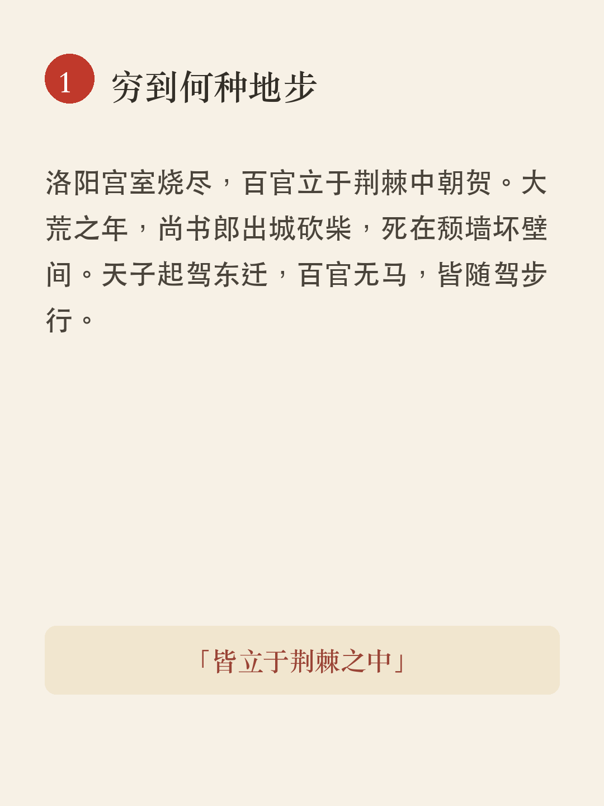
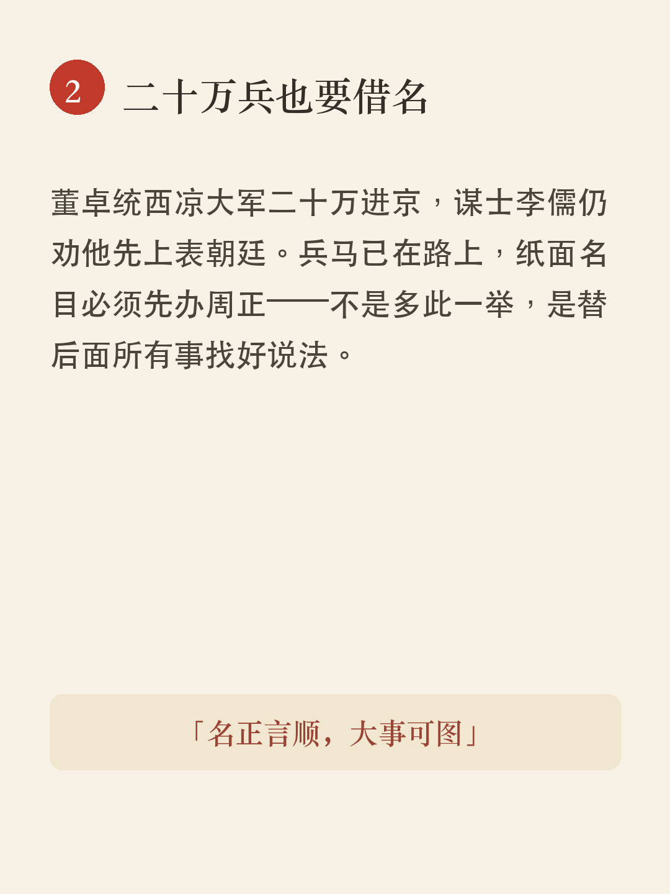
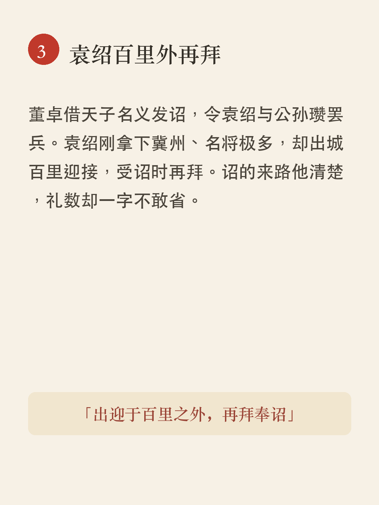
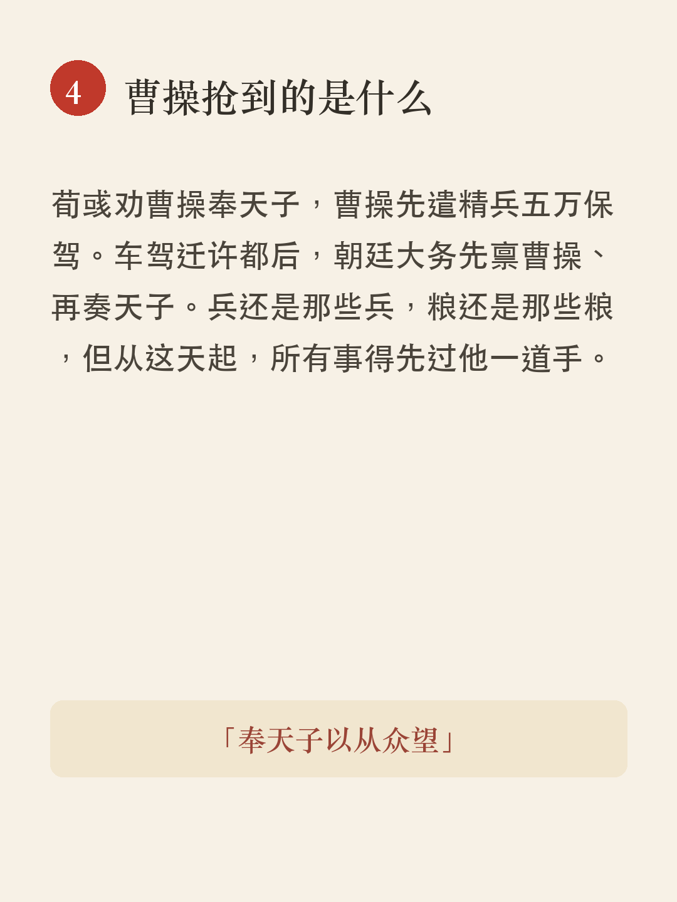
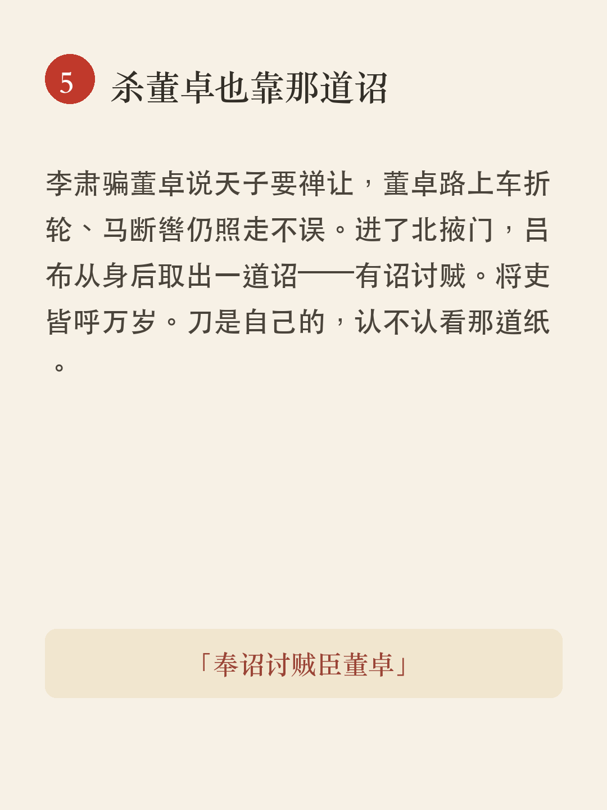
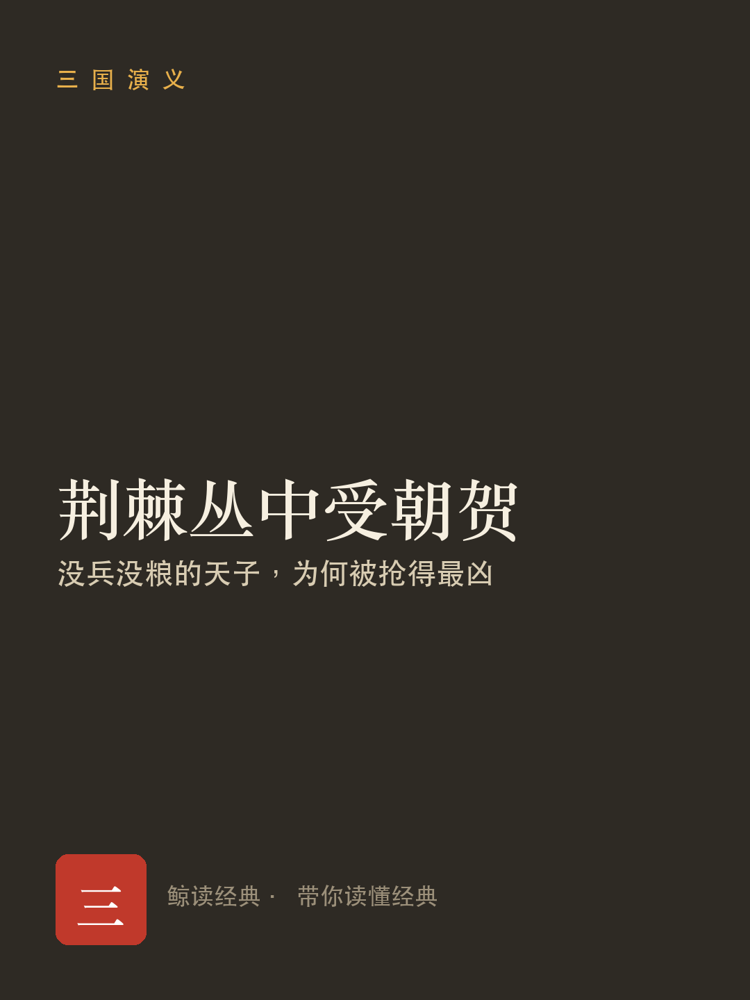
📄 配文·钩子（不剧透）
百官站在荆棘里朝贺，天子连马都凑不齐。可袁绍出城百里跪迎一道诏，吕布杀董卓时怀里掏出的也是它。＋ 讲透版·自成一体（小红书图文）
《三国演义》里有个细节特别值得停下来看：天子回到洛阳，宫室烧尽，百官朝贺时「皆立于荆棘之中」。同一年大荒，尚书郎以下的官自己出城砍柴，很多人死在颓墙坏壁之间。后来起驾东迁，百官连马都没有，只能步行跟着。
这样一个朝廷，给不了任何人一兵一粮。但董卓带二十万西凉兵进京，李儒还是劝他先上表——「名正言顺，大事可图」；袁绍刚拿下冀州，手下名将无数，收到一道借天子名义发的诏书，仍然出城百里、再拜奉诏；曹操听了荀彧的话，抢先把天子接到许都，从此「朝廷大务，先禀曹操，然后方奏天子」——兵还是那些兵，粮还是那些粮，但所有事得先过他一道手。
最讽刺的是董卓之死。李肃拿「禅让」骗他进京，路上车折轮、马断辔，凶兆叠出，他照样往里走——手里握着天下兵马的人，动身去拿的偏偏是台上那一道手续。等他进了北掖门，吕布从怀里掏出的不是刀，是一道诏：「奉诏讨贼臣董卓。」将吏皆呼万岁。
刀是自己的，肯不肯跟着这一刀走，看的是旁边的人认不认。董卓倒下的那一刻，所有人认的是那道诏。
这就是「名分」的真正重量：它不产粮、不造兵，但它决定谁有资格开口、谁必须闭嘴。汉末群雄抢的不是一个落魄皇帝，是一个让天下人点头的说法。没有这个说法，你的兵再多也只是匪；有了它，你的刀才叫王师。
今天回头看，这件事其实指向一个很朴素的问题：权力到底是手里的资源，还是别人嘴里的那句「认」？
口播稿全文
大家好，我是小鲸。
《三国演义》里有一件事，头一回看会觉得不合常理：汉末那几年，诸侯手里有兵有粮，谁都不缺，反倒是那个一无所有的天子，被抢得比谁都急。
书里给的原因很直白：兵和粮只能管住自己的人，要调动别人的人，得有一个说得出口的名目。
先看这个天子穷到什么份上。皇帝回到洛阳，宫室烧尽，街市荒芜，满眼都是蒿草，只能让人搭个小宫住下；百官朝贺的时候，书里写「皆立于荆棘之中」。那一年又赶上大荒，洛阳城里只剩下几百户人家，「无可为食，尽出城去剥树皮掘草根食之」，尚书郎以下的官自己出城砍柴，很多人死在颓墙坏壁之间。后来李傕、郭汜的兵又要打过来，天子只好起驾往东避，「百官无马，皆随驾步行」。
就是这样一个连马都凑不齐的朝廷，前面早就有人替它标过价。
董卓当初往洛阳去，本来就是拿着诏进京的，手底下统着西凉大军二十万。可他的谋士李儒还是说了一句：「今虽奉诏，中间多有暗昧。何不差人上表，名正言顺，大事可图。」二十万人马已经在路上了，还得先把纸面上的名目办周正——这不是多此一举，这是把后面所有的事都提前找好说法。
这说法有多顶用，看袁绍。后来董卓想让袁绍和公孙瓒罢兵，用的办法是「宜假天子之诏」，借天子的名义发一道诏书下去。那时候袁绍刚拿下冀州，手下名将极多，正跟公孙瓒在磐河打得凶。诏送到河北，他做的是：「绍出迎于百里之外，再拜奉诏。」出城一百里去接，受诏时还要再拜。这道诏是谁的主意，书里写得明明白白，可在礼数上，袁绍一个字不敢省。
真正把这一层想透的是荀彧。天子刚回到洛阳，他对曹操说的是「奉天子以从众望，不世之略也」，后面还补了一句：你不早点动手，别人就先动手了。曹操也动得快，先派夏侯惇领上将十员、精兵五万赶去保驾，皇帝说了一句：「曹将军真社稷臣也！」等车驾迁到许都，书里给了这么一句：「自此大权皆归于曹操。朝廷大务，先禀曹操，然后方奏天子。」兵还是那些兵，粮还是那些粮，可从这天起，朝廷的事得先过他一道手。
更狠的是，这套东西还能反过来用在懂它的人身上。这回是李肃去郿坞骗董卓，说天子病好了，要把位子禅让给太师，又加一句：「王司徒已命人筑『受禅台』，只等主公来。」董卓大喜。路上车忽然折了一轮，换马骑，马又挣断了辔头，他自己都说出「车折轮，马断辔」这样的话，可还是照走不误——手里握着兵马的人，动身去拿的偏偏是台上那一道手续。等他进了北掖门，两旁转出百余人持戟刺来，吕布从车后厉声喝道，喊的是「有诏讨贼！」，随后右手从怀里取出那道诏，再喊一句「奉诏讨贼臣董卓，其余不问！」。书里跟着写：将吏皆呼万岁。
同一样东西，袁绍拿它罢兵，曹操拿它迁都，吕布拿它下刀。
回到洛阳那片白地。那个被百官围在荆棘里受朝贺、出门连马都凑不齐的人，给不了谁一兵一粮，他能给的只有一个说法——这事是奉了诏的。可那几年，就是这个说法，被抢得比兵和粮都急。刀是自己的，肯不肯跟着这一刀走，看的是站在旁边的人认不认；董卓倒下那一刻，认的是那道诏。
90新版洞见scene公版✓ 判官过审低头之前，他先立下“三约”
🎬 没有筹码时还能把条件谈成，靠的是说出口的话日后天天算数
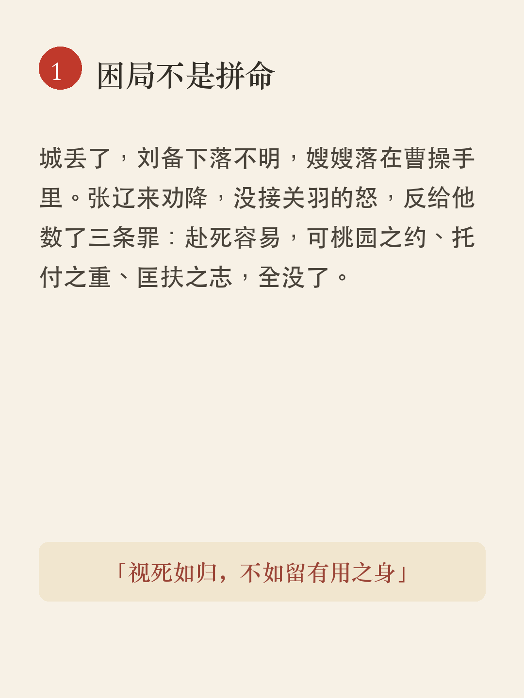
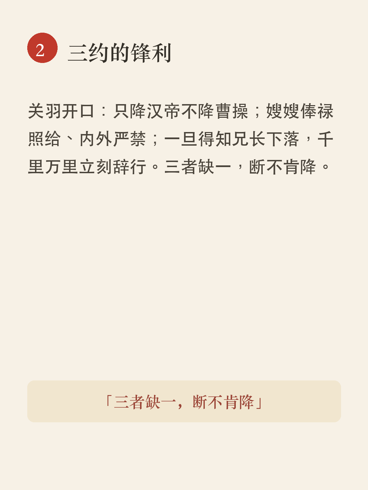
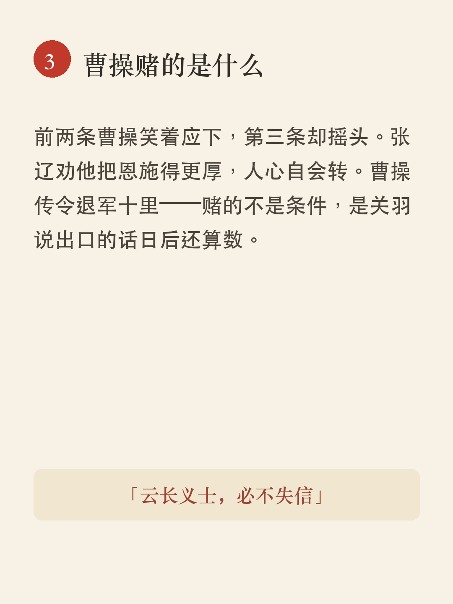
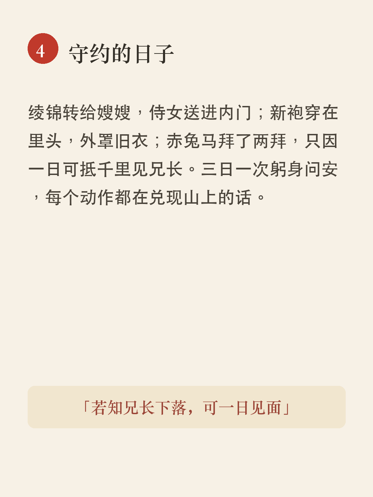
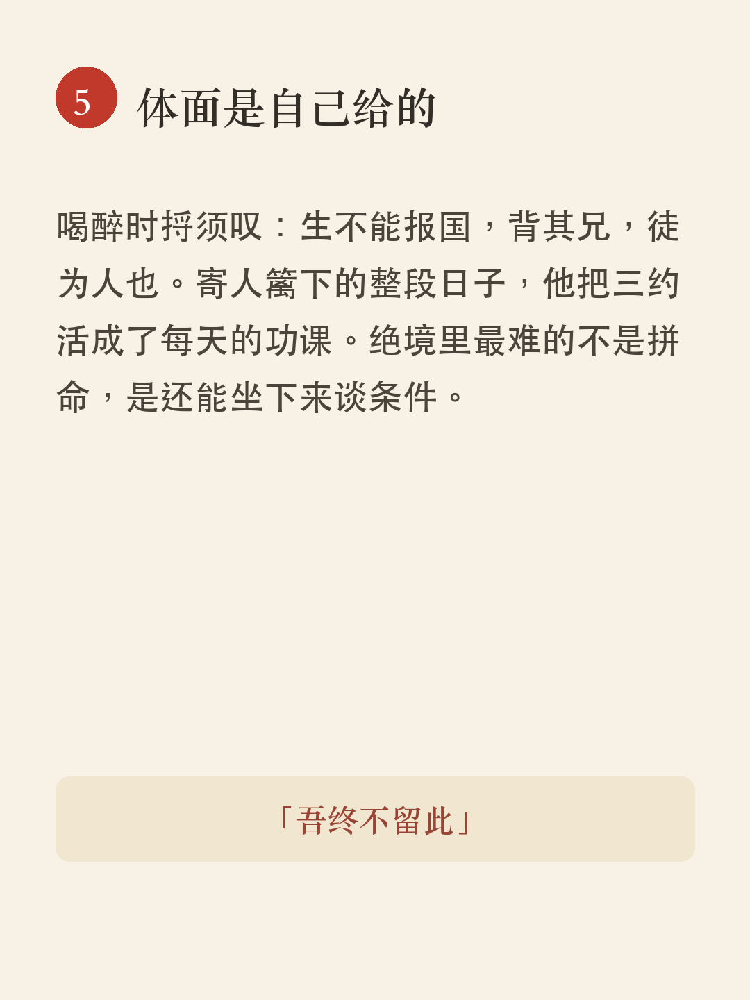
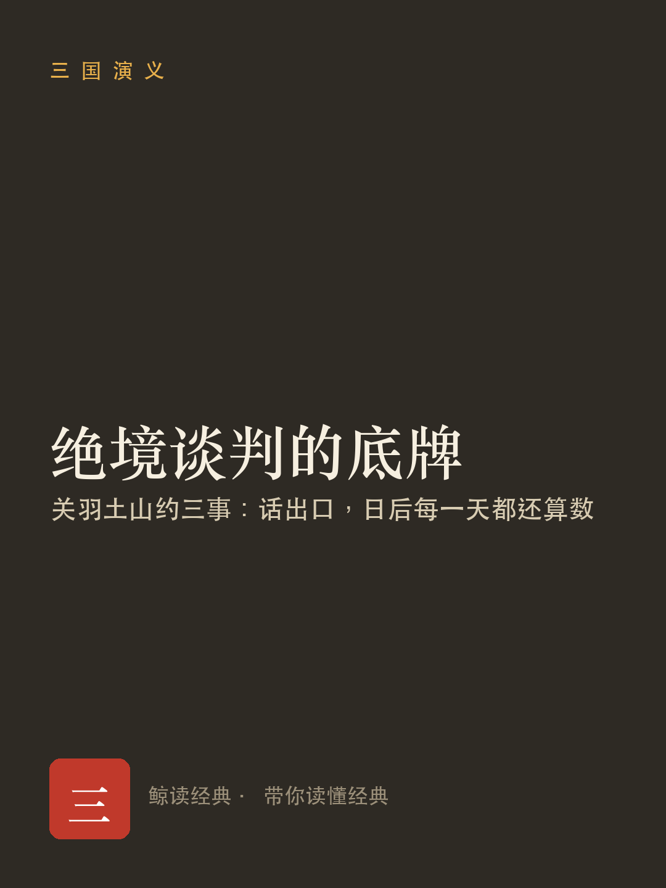
📄 配文·钩子（不剧透）
屯土山上，关羽手里只剩一样东西——他说出口的话，日后每一天都还算数。＋ 讲透版·自成一体（小红书图文）
《三国演义》第二十五回，关羽兵败被围土山，张辽来劝降。关羽没有硬气赴死，也没有屈膝求生，而是开口谈条件——'吾有三约'。
这三条约的不是利益，是底线：只降汉帝不降曹操，嫂嫂俸禄照给内外严禁，得知兄长下落千里万里必走。前两条曹操一笑应下，第三条却让他犹豫——答应它，等于亲手给对方留一扇随时走出去的门。
曹操最终点了头，传令退军十里。他赌的不是条件谈得多好，是关羽这个人说出口的话，日后每一天都还算数。
后来的日子证明了这场赌局。绫锦原样转给嫂嫂，侍女全送进内门伺候；新战袍穿在里头，外面仍罩着刘备给的旧衣；赤兔马送来他破例拜了两拜，理由直白得让曹操当场愣住——'若知兄长下落，可一日而见面矣'。一匹快马的好处，在他心里直接折算进了第三条。
每三天躬身到内门外行礼问安，这个动作他做了整段寄人篱下的日子。山上那片刻谈成的三约，靠往后每一天去守住。
绝境里真正难的，从来不是拼命。是手里一样筹码都没有的时候，还能坐下来把条件谈成；是谈成之后，用往后所有的日子去兑现那一刻说出口的话。
口播稿全文
大家好，我是小鲸。
绝境里真正难的，不是拼命，是还能坐下来谈条件。手里一样筹码都没有的时候还能把条件谈成，靠的往往不是那一刻多硬气。
《三国演义》里有这么一段。关羽兵败，被围困在一座土山上，城丢了，刘备下落不明，两位嫂嫂落在曹操手里。上山来劝降的，是他当年救过命的老朋友张辽。
关羽一开口是发怒的，说自己虽在绝地，视死如归，让对方赶紧走。张辽没有接这句，反过来给他数了三条罪：当初结义誓同生死，你现在战死了，刘备万一还在、要找你相助就再也找不到了；刘备把家眷托付给你，你死了，两位夫人无所依靠；你一身本事又通经史，不去匡扶汉室，只图痛快赴死，这也算义？关羽沉吟了一阵，问他那我该怎么办。张辽说了投降的三样好处：保得住两位夫人，不背桃园的约定，留一条有用之身。
关羽的回答是：“兄言三便，吾有三约。”
三条是这样的。第一条，他只向汉朝的天子投降，不向曹操本人投降——“吾与皇叔设誓，共扶汉室，吾今只降汉帝，不降曹操”。第二条，两位嫂嫂那边按刘备的俸禄照常供给，上上下下任何人不许进那道门。第三条，一旦打听到刘备去向，不管千里万里，他立刻辞行。说完他补了一句：“三者缺一，断不肯降。”书里给这一段起的题目，就叫“屯土山关公约三事”。
有意思的是对面怎么接这三条。第一条曹操一笑就化开了：他是汉相，汉就是他，这条可以答应。第二条他不但答应，还往上加——“吾于皇叔俸内，更加倍与之。至于严禁内外，乃是家法，又何疑焉？”到了第三条，曹操摇了头：“然则吾养云长何用？”
第三条确实难。答应它，等于亲手给对方留一扇随时能走出去的门。曹操是被张辽劝下来的，理由是把恩情施得更厚，人心自然会转过来。曹操最后说：“吾愿从此三事。”
条件谈成，关羽还没下山，又加了一件事：先请对方退兵，容他进城见过两位嫂嫂、把话讲明白，然后再来投降。荀彧劝曹操当心有诈，曹操只说了句“云长义士，必不失信”，传令退军十里。
真正让这三条立住的，是后来的日子。绫锦金银送过来，他原样转给两位嫂嫂收着；十名侍女送过来，他全送进内门去伺候两位嫂嫂，自己隔三天到内门外躬身行个礼，问一声两位嫂嫂好不好——书里写的是“三日一次于内门外躬身施礼，动问二嫂安否”。新战袍送来，他穿在里头，外面仍旧罩着刘备给的那件旧的。赤兔马送来，他破例拜了两拜，理由说得很直白：“若知兄长下落，可一日而见面矣。”一匹快马的好处，在他心里直接折算进了第三条。曹操当场就愣住了，后悔送出这匹马。
可这段日子在他自己看来并不体面。有一次喝醉了，他捋着自己的胡子说：“生不能报国家，而背其兄，徒为人也！”后来张辽奉命来探他的口风，他把话摊开：“吾终不留此。”他要先立一份功劳报答了曹操，然后才走。
回到那座土山。他当时能拿出手的东西其实只剩一样：他说出口的话，日后每一天都还算数。三条谈成用的是山上那片刻，守住它用的是往后寄人篱下的整段日子。山下的大军退开十里，赌的就是这个。
90新版映照scene公版✓ 判官过审他看见大腿上的肉又长了，哭了
🎬 日子有没有白过，日历看不出来，身上一处不起眼的变化看得出来。
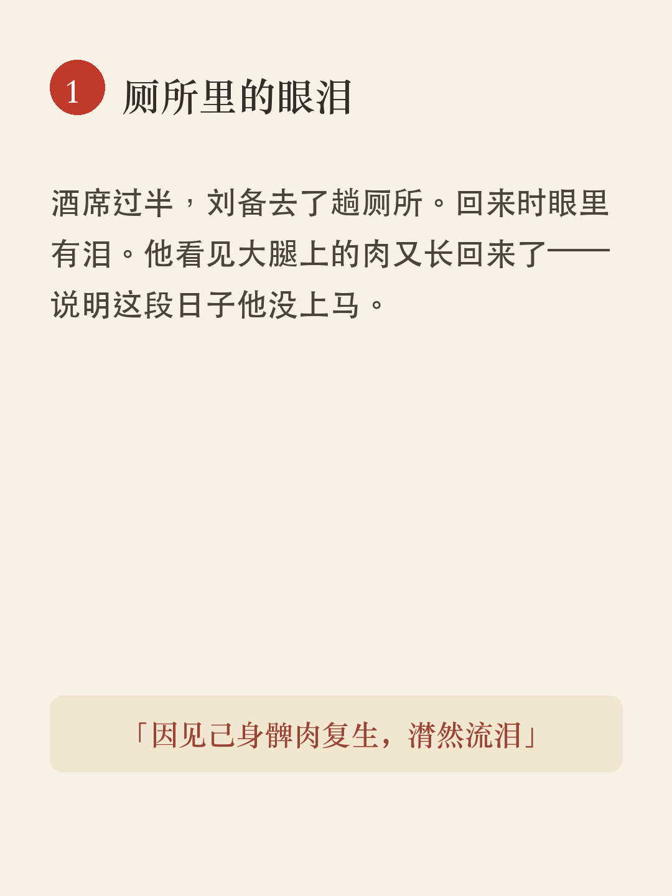
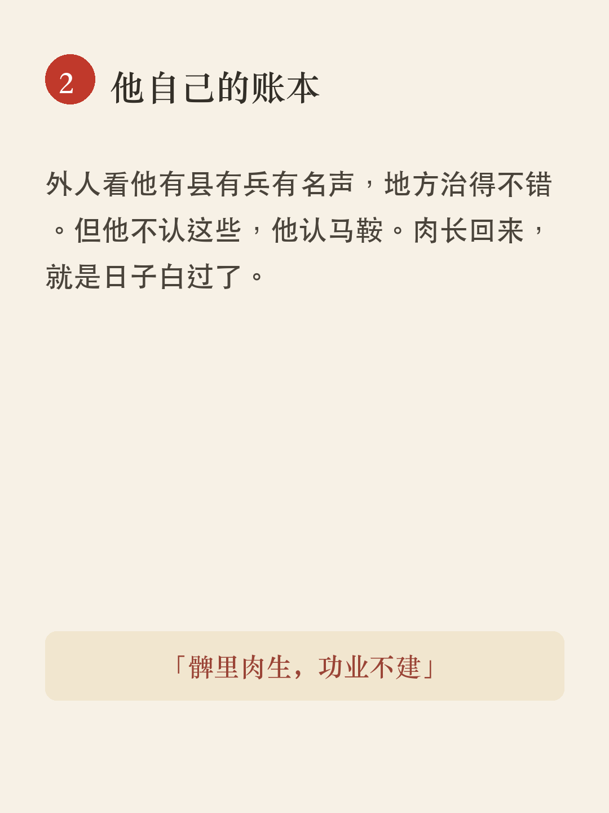
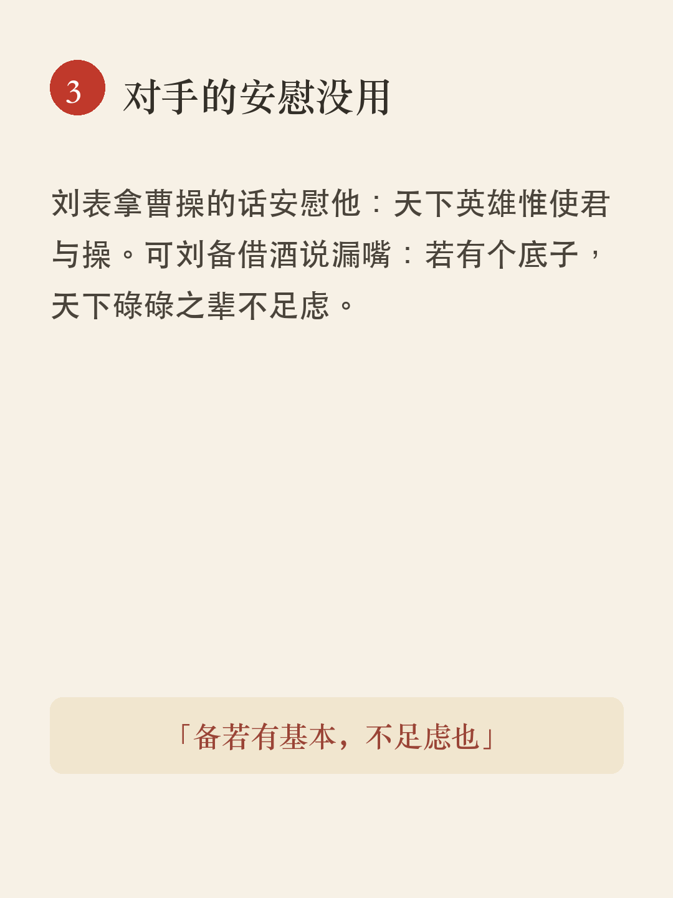
📄 配文·钩子（不剧透）
酒席过半，刘备从厕所回来，眼里有泪——他看见了什么？＋ 讲透版·自成一体（小红书图文）
刘备寄居荆州那几年，外人看来不算白过：有新野落脚，有兵可带，地方治理得军民皆喜。可他自己不认这笔账。他认的尺子是马鞍——以前天天骑马，大腿内侧的肉磨散了；这些年不上马，髀肉又长了回来。肉一长，他就知道日子空转了。
刘表拿曹操「天下英雄惟使君与操」的评价来安慰他，这是对手给的极高认可。但这句话没把刘备安住。他借着酒兴说漏一句：我要是有个底子，天下碌碌之辈不足虑。屏风后有人听见了。当夜三更，有人来报信要杀他，他连夜奔回新野。
所以「功业不建」从来不是酒桌上的客气话。他那会儿连今晚睡哪儿安不安全都定不了。
这件事照到今天，照的不是老不老，是那把尺子。我们身上也有一处替自己记账的地方——可能是很久没打开的文件，可能是学到一半停下的东西，可能是体检单上变化的几行。嘴上可以说挺忙挺充实，那一处不会跟着你说。刘备没有拿别人给的评价，去盖住自己身上那块肉。
口播稿全文
大家好，我是鱼儿。
有一种日子白过了的感觉，不是从日历上看出来的，是从自己身上一处不起眼的变化里看出来的。
酒席过半，有个人起身去了趟厕所。回来坐下，眼里有泪。主人看见了，觉得奇怪，问他这是怎么了。
他在厕所里看见的东西很小：他大腿上的肉，又长回来了。
书里写的是：「因见己身髀肉复生，亦不觉潸然流泪。」这人是刘备，那阵子他正寄住在荆州。
回到席上，他把话说开了：「备往常身不离鞍，髀肉皆散；今久不骑，髀里肉生。日月蹉跎，老将至矣，而功业不建，是以悲耳！」
以前天天在马上，大腿内侧的肉磨得都散了；这些年不怎么上马，肉又长起来。
你留意他用的是什么尺子。不是年龄，不是别人的评价，是他身上那块肉。肉长回来了，就说明这段日子他没在马背上。
而他并不是闲着。书里写他到新野以后，「军民皆喜，政治一新」；刘备还劝过刘表，趁曹操北征、许昌空虚，抓一把机会，刘表回他一句：「吾坐据荆州足矣，岂可别图？」刘备也只能默然。后来曹操从北边回了许都，刘表自己后悔了，跟刘备说悔不听贤弟之言，失了这个好机会。
所以在外人眼里，他这几年不算白过：有落脚的县，有带着的兵，有名声，地方也治得好。可他自己那笔账不认这些。他认马鞍。
紧接着的一段更值得听。刘表当场就来安慰他，就说，听说你在许昌跟曹操青梅煮酒论英雄，你把当世名士一个个举出来，曹操全不认，只说了一句：「天下英雄，惟使君与操耳。」连曹操都承认与你并称英雄，你愁什么功业不建。
这是很高的评价，而且是从对手嘴里出来的。
可这句话没能把刘备安下来。他借着酒兴，说漏了一句：「备若有基本，天下碌碌之辈，诚不足虑也。」——要是我有个属于自己的底子。刘表听完没接话，书里只写「表闻言默然」。
这话屏风后面一直有人在听。那天夜里他回到住处，三更还没睡下，有人叩门来报：有人要动手杀他。他连夜唤人上马，不等天亮，一路奔回新野。
他说的功业不建，不是酒桌上的自谦。他连今晚睡在哪儿安不安全，都还不由自己定。
这件事照到今天，照的不是老不老，是那把尺子。
我们身上也都有一处替自己记账的地方。可能是很久没打开的那个文件，可能是学到一半就停下的那门东西，可能是体检单上跟以前不一样的几行。嘴上可以说这些年挺忙、挺充实，身上那一处不会跟着你一起说。
刘备的应对也不算高明：他没在那顿酒里把问题解决掉，他只是把它说出了口，说完还多说了一句不该说的，当夜就得跑。可他起码没有拿别人给的那句评价，去盖住自己身上那块肉。
后来写他的人，有一句诗把这一趟厕所也写进去了：「髀肉复生犹感叹，争教寰宇不三分？」他坐在那里对着自己大腿掉眼泪的时候，手里什么都还没有；隔了很久，别人是把这一声叹和天下三分放进同一句里说的。
而他那天只知道一件事：肉长回来了。
90新版洞见thread公版✓ 判官过审赤壁以少勝多，是五道工序：聯盟、除水軍主將、補箭、布內應、鎖船；只欠東風
🎬 运气只管最后一步：赤壁那把火，东风之前有五道工序。
📄 配文·钩子（不剧透）
曹操斩了蔡瑁张允才醒悟中计，阚泽送降书被拍案要杀时只回了八个字——赤壁那把火点着之前，还有五件更凶险的事。＋ 讲透版·自成一体（小红书图文）
赤壁之战常被简化成「一把火+一阵风」，但书里写得很清楚：火烧起来之前，有五道工序必须一件一件办完。
第一道是联盟。周瑜把话兜了一大圈才交底，孔明用「愿效犬马之劳」接住，联盟是一句一句咬合上的，不是喊口号。
第二道是除掉曹操的水军都督蔡瑁、张允。周瑜坐楼船探完曹营水寨，夸了一句「深得水军之妙」，回头就动了杀心——这两人太懂水战，留着打不赢。蒋干过江劝降被将计就计，曹操斩了二将端来人头才醒：「吾中计矣。」
第三道是箭。十万枝，三天。大雾夜二十只船一字排开擂鼓呐喊，逼近水寨受箭，雾散回船束草上「排满箭枝」，军士齐喊「谢丞相箭」。弹药是从对手手里领的。
第四道是苦肉计。黄盖当众顶撞周瑜，被剥衣拖翻打了五十脊杖，「皮开肉绽，鲜血迸流」。这顿打是两人事先商量好的——自己人先挨真打，对面才信。阚泽夜送降书，曹操翻来覆去看了十余次忽然拍案要杀，说没约日期。阚泽顶回一句：「背主作窃，不可定期。」曹操听完下席道歉。
第五道是锁船。庞统在曹操帐里说好话——北方兵不惯乘舟，把大小船用铁环连锁铺上阔板，人马都能走。曹操当即连夜打造连环大钉。等火船撞进水寨，船被铁环连在一处，「无处逃避」。
五件办完，孔明才给病中的周瑜递了张纸条：「万事俱备，只欠东风。」值得多看一眼的是「只欠」两个字——能说「只欠」的人，是把能办的都办完了的人。
东南风真起了那天，程昱提醒曹操提防，曹操笑着答「冬至一阳生，安得无东南风，何足为怪」——他说得没错，隆冬偶尔刮阵东南风不算怪事。可同一阵风，在曹操那儿只是天气，在江这边是等了许久的那一刻。
所以赤壁真正讲的不是运气，是一个分工：人负责把万事办到「俱备」，天负责把最后那一阵风送来。风对两岸都刮，能被它点着的，是船里早就装好的芦苇干柴。
口播稿全文
大家好，我是鱼儿。
赤壁那把火，难的不是点火。是火点起来之前，有五件事必须先办完——办不完，东风来了也白来。书里把这五件事一件一件写着，等于把“以少胜多”拆成了看得见的工序。
先办的是把人凑齐。周瑜把话兜了一大圈，这才把底交给孔明：「望孔明助一臂之力，同破曹操。」孔明接的是「愿效犬马之劳，早晚拱听驱策」。联盟不是喊出来的，是这样一句一句咬合上的。
盟一结上，周瑜没急着打，先去看对手的家底。他带着鼓乐坐楼船去探看曹操的水寨，看完只说了一句「此深得水军之妙也！」——这是夸，也是警报。他回头就问：水军都督是谁？答：蔡瑁、张允。周瑜当场定了主意：「二人久居江东，谙习水战，吾必设计先除此二人，然后可以破曹。」后面那出戏靠一个老同学演成了：蒋干过江来劝降，被留下同榻，半夜在桌上翻到一封写着蔡瑁张允的信，揣进怀里连夜跑回去。曹操把两个人推出去斩了，人头端到帐下，他才醒过来：「吾中计矣！」接手水军的两位，孔明给的判词是「在这两个手里，好歹送了水军性命」。
再往下是很实在的一件：箭。周瑜问「水路交兵，当以何兵器为先？」孔明答「大江之上，以弓箭为先」。答完，难处才露出来——「军中正缺箭用」，十万枝，三天。大雾那夜，二十只船一字排开，擂鼓呐喊，又掉转过来逼近水寨受箭；雾散回船，两边束草上「排满箭枝」，军士齐声喊「谢丞相箭！」这批弹药，是从对手手里领的。
还有一件是拿血换的。黄盖在众将面前顶了周瑜一句，被剥了衣服拖翻在地，打了五十脊杖，「皮开肉绽，鲜血迸流」，扶回本寨昏绝几次。这顿打是两人事先商量好的——自己人先挨一顿真打，对面才肯信。接着阚泽扮成渔翁，夜里驾小舟过江送降书。曹操把那封书翻来覆去看了十余次，忽然拍案要杀他，说是没约日期。阚泽顶回去一句老话：「背主作窃，不可定期。」曹操听完，下席道歉。约定的记号很小：「船上插青龙牙旗者，即粮船也。」
还剩一件：让对手动不了。庞统坐在曹操帐里说的全是好话——北方兵不惯乘舟，颠得生病，那就把大船小船配搭起来，「首尾用铁环连锁，上铺阔板，休言人可渡，马亦可走矣」。曹操当即就叫来铁匠，「连夜打造连环大钉，锁住船只」。等火船撞进水寨那一刻，这句好话才翻过来算账：曹寨里的船一时尽着，被铁环连在一处，「无处逃避」。
五件都办完，孔明才给病在床上的周瑜写了张纸条，屏退左右，就一句：「欲破曹公，宜用火攻；万事俱备，只欠东风。」递过去时孔明说，这就是都督的病源。值得多看一眼的是“只欠”两个字：能说“只欠”的人，是把能办的都办完了的人；差的只有一件，可这一件人办不到。
对面也不是没听见风声。东南风起那天，程昱提醒曹操「今日东南风起，宜预堤防」，曹操笑着答：「冬至一阳生，来复之时，安得无东南风？何足为怪？」他说得其实不错，隆冬刮一阵东南风，本来不算怪事。可将近三更，旗脚竟飘西北，「霎时间东南风大起」。同一阵风，在曹操那儿是天气，在江这边是等了许久的那一刻。
「火趁风威，风助火势，船如箭发，烟焰障天。」三江面上「一派通红，漫天彻地」。这把火看着是东风点的，可东风只是那句话的后半截；前半截「万事俱备」，是五件事一件不落办出来的。风对两岸都刮，能被它点着的，是船里那些早就装好的芦苇干柴。
90新版映照scene公版✓ 判官过审拱立階下一個時辰的人，被問「有俗客來否」
🎬 真正的敬重，是你完全有资格计较的时候，一件都不计较。
📄 配文·钩子（不剧透）
离草庐半里他就下了马，到门前不让通报，诸葛亮翻身又睡，他拦下童子说「且勿惊动」——然后拱着手，在阶下站了一个时辰。＋ 讲透版·自成一体（小红书图文）
《三国演义》三顾茅庐那段，最见功夫的不是情节，是一个字。
刘备在诸葛亮草堂阶下等了一个时辰，原文没写他「站」，写的是「拱立」——拱着手站着。手一直没放下来。这一个字把整件事的性质翻了个个儿：那不是他在忍，是他在行礼；那一个时辰不是等待的长度，是礼的长度。
所以我们替刘备委屈，其实是拿自己的账本在替他算——我都站了这么久，他还问「有俗客来否」，太过分了吧。但刘备自己不算。半里外下马不算，不让通报不算，被叫俗客之后见面仍下拜，也不算。他把所有能翻出来当筹码的东西，一件件放下了。
诸葛亮那边呢？后来他跟弟弟交代这事，说的是「吾受刘皇叔三顾之恩，不容不出」。落在「顾」字上，没落在「等了多久」上。等的人把它记成自己的礼，被等的人把它记成别人的恩——这一个时辰里，两头都没有人在算账。
现在我们的诚意常常自带账本：我先发的消息、我先低的头、我等了多久。一旦对方没接住，账就翻出来，前面做过的全变成筹码。但刘备那个「拱」字提醒的是另一件事——真正的敬重，是在你完全有资格计较的时候，一件都不计较。不是忍着不计较，是根本没往那个方向想。
口播稿全文
大家好，我是鱼儿。
你有没有过这种时候——你在等一个人，等到自己都觉得，这份耐心已经算是给对方的面子了。
《三国演义》里有一段，专门写了这样一个时刻。它给出的答案很朴素：真正的敬重，是在你完全有资格计较的时候，一件都不计较。
刘备第三次去隆中请诸葛亮。原文写他「离草庐半里之外，玄德便下马步行」——路还有半里，他就从马上下来，走过去。到门前敲门，童子出来说：「今日先生虽在家，但现在草堂上昼寝未醒。」
换成我们，这时候大概会说：那你去叫他一声。刘备说的是：「既如此，且休通报。」
他自己慢慢走进去，只见一人仰卧在席上。原文接下来只有一句：「玄德拱立阶下。」
关羽张飞在门外站久了，不见动静，进来一看，哥哥还站着。张飞当场就发作，说「这先生如何傲慢」，还要「去屋后放一把火，看他起不起」。云长再三劝住，刘备仍旧让他们两个出门外等着。
中间有个特别真切的细节：他望着堂上，「见先生翻身将起，忽又朝里壁睡着」。眼看是要起来了，又翻回去睡了。童子想去报，刘备拦下来：「且勿惊动。」
前面已经站了半晌，之后原文写「又立了一个时辰，孔明才醒」。
醒来第一件事是吟诗：「大梦谁先觉？平生我自知。草堂春睡足，窗外日迟迟。」吟完，翻身问童子：「有俗客来否？」
童子回答：「刘皇叔在此，立候多时。」
被算成俗客的这个人，第一次来的时候是这么自报的：「汉左将军宜城亭侯领豫州牧皇叔刘备特来拜见先生。」童子当时说「我记不得许多名字」，他就改口：「你只说刘备来访。」
孔明这边听完，喊了一句「何不早报！尚容更衣」，转进后堂，「又半晌，方整衣冠出迎」。而刘备见面第一个动作，仍是下拜，说的是：「汉室末胄、涿郡愚夫，久闻先生大名，如雷贯耳。」
你发现没，这不就是现在的我们吗。我们的诚意常常自带一个账本：我先发的消息、我先低的头、我等了多久、我把姿态放到了哪一步。一旦对方没接住，账就翻出来——我都这样了，他还这样。这一翻，前面做过的全变成了筹码。
刘备在那个时辰里做的，正好是反着的：把能当筹码的东西一件件放下。半里外就下马，到了门前也不让通报，童子要去报还被他拦住，被叫成俗客，刘备起身后的第一件事仍是下拜。
而这里最见功夫的是原文用的字：不是站，是「拱立」——拱着手站在阶下。手一直是拱着的。所以那不是他在受委屈，那是他在行礼；那一个时辰不是等待的长度，是礼的长度。
关张要发作的时候，他按住两个人的话，不是说“我们需要这个人”，而是：「汝皆不闻周文王谒姜子牙之事乎？」——他举的是很久以前另一个人去请人时的样子。
所以回到开头，耐心开始变成面子的那一刻。一个时辰长不长，其实取决于你把它记成谁欠谁。后来孔明跟弟弟交代这件事，用的词是「吾受刘皇叔三顾之恩，不容不出」——落在那个“顾”字上，没落在等了多久上。等的人把它算成自己的礼，被等的人把它记成别人的恩；这一个时辰里，两头都没有人在算账。
90新版洞见scene公版✓ 判官过审金帛美女屡赠不拜，吕布旧赤马一到他当场再拜
🎬 看一个人为哪件礼物道谢，就知道他要去哪儿——关羽只为一匹马下拜。
📄 配文·钩子（不剧透）
曹操送了一趟又一趟，关羽一次没弯腰，直到那匹赤兔马被牵出来。＋ 讲透版·自成一体（小红书图文）
《三国演义》土山约降之后，曹操在许昌对关羽下了血本。金银器皿、绫锦、美女十人、三日小宴五日大宴，连绿锦战袍旧了都专门裁一领新的。关羽全收了，但书里写得清清楚楚：「累送美女金帛，公未尝下拜。」一趟都没弯过腰。新袍穿在里头，外面仍罩刘备赐的旧袍；美女送进内门去服侍嫂嫂。收是收了，心没动过。
转折在一匹马上。宴散送客，曹操见关羽的马瘦，让人牵出赤兔马——通身火炭红，吕布旧骑，连鞍带辔一并送了。关羽当场再拜。曹操当场就不高兴了，把账摊开：「吾累送美女金帛，公未尝下拜；今吾赠马，乃喜而再拜，何贱人贵畜耶？」关羽只讲了一件事：「吾知此马日行千里，今幸得之，若知兄长下落，可一日而见面矣。」原著紧跟三个字：「愕然悔」。
曹操悔什么？他送出去的每一样东西——钱、衣服、人、酒席、官职——指的都是同一个方向：留下来。荀彧后来点得更透，说关羽当初讲明立功才走，「若不教彼立功，未必便去」。只有马不是留人的东西。马是往外走的。日行千里，意味着一旦打听到兄长在哪，一天就能到。曹操松手那一刻，等于亲手把对方离开的脚力配齐了。关羽那一拜，谢的不是马，是路。
这件事放在今天也看得见。我们给人东西，习惯按自己的心意给：给贵的、给体面的、给能显出诚意的。可对方是客气一下还是真的记住你，取决于这东西有没有落在他自己要去的方向上。给的是留人的东西，人还是会走；给的是他往前走那条路上正缺的一步，他才会真的弯腰。想看一个人心里装着什么，别数他收下了多少，看他为哪一件真的道了谢——那一谢冲着的方向，就是他要去的方向。
口播稿全文
大家好，我是小鲸。
想看清一个人心里真正惦记着什么，不用问他，看他为哪一件礼物道谢就行。
《三国演义》里有一段，把这件事写得很干净。
关羽被困在土山上，谈条件才肯下来，其中一条是：「但知刘皇叔去向，不管千里万里，便当辞去。」到了许昌，曹操就开始送东西。金银器皿、绫锦，一趟一趟往他府里送；关羽都收下，转手交给两位嫂嫂保管。又送美女十人来侍奉他，他把人全送进内门，让她们去服侍嫂嫂。宴请也没停过，三日一小宴，五日一大宴。见他那件绿锦战袍旧了，曹操专门取了好料子做一领新的送他——关羽也接了，穿在里头，外面仍旧罩上那件旧的。曹操问他何必这么俭省，他说：「旧袍乃刘皇叔所赐，某穿之如见兄面，不敢以丞相之新赐而忘兄长之旧赐，故穿于上。」曹操当着众人夸他「真义士也！」书里紧跟着一句：「口虽称羡，心实不悦。」
这些礼有多重，曹操自己算过账。后来他把话说得很直：「吾累送美女金帛，公未尝下拜。」送了那么多趟，对方一次没弯过腰。
转折出现在一个很平常的场面里。那天宴散，曹操送他出府，看见他的马瘦，问了一句马怎么这么瘦；关羽说自己身子重，马驮不起，所以马总是瘦。曹操让左右牵一匹来——那马通身像火炭一样红，样子很雄伟，是吕布从前骑的那匹赤马。连鞍带辔一起给了他。
关羽当场再拜称谢。
曹操不高兴了，把前面那笔账当面摊开：「吾累送美女金帛，公未尝下拜；今吾赠马，乃喜而再拜，何贱人贵畜耶？」意思是，人还不如一头畜生金贵？
关羽的回答只讲了一件事：「吾知此马日行千里，今幸得之，若知兄长下落，可一日而见面矣。」
原著写曹操听完这句，「愕然悔」。
这一下才是这段真正的分量。曹操送出去的每一样东西——钱、衣服、人、酒席、朝廷的官职——都很实在，可它们指的都是同一个方向：留下来。荀彧后来把这层心思说得更明白，他提醒曹操，关羽当初就讲明：立了功才走，那么「若不教彼立功，未必便去」。整套厚待，是往回拉人的。
只有那匹马不是。马是往外走的东西。日行千里的意思是，他一旦打听到兄长在哪儿，一天就能到。曹操松手的那一刻，等于亲手把对方离开的脚力给配齐了。所以关羽那一拜，谢的不是马，是路。
曹操悔的也不是舍不得一匹马。他悔的是，自己一直在用重礼试探一颗心，而这颗心刚刚借着他的礼物，明明白白把答案交到了他手上。关羽后来跟张辽讲的也是这话：「吾固知曹公待吾甚厚；奈吾受刘皇叔厚恩，誓以共死，不可背之。」
这件事放到今天也一样看得见。我们给人东西，多半按自己的心意给：给贵的、给体面的、给能显出诚意的。可对方是客气一下还是当真收下，取决于这东西有没有落在他自己要去的那个方向上。给的是留人的东西，人还是会走；给的是他往前走那条路上正缺的一步，他才会真的记住你。
关羽收了那么多趟礼都没弯腰，为一匹吕布骑过的马弯了。以后想弄清谁心里装着什么，也别数他收下多少，看他为哪一件真的道了谢——那一谢冲着的方向，就是他要去的方向。
90新版洞见scene公版✓ 判官过审开打之前，有人把败因一个个点名
🎬 官渡还没打，许都有人把袁绍帐下四个谋士挨个点了一遍，说这四个人势不相容，必生内变。
📄 配文·钩子（不剧透）
官渡开战前，孔融报了一份能人名单说打不得，荀彧却只盯着名单上的四个毛病——后来的事，全照着这四句话走了一遍。＋ 讲透版·自成一体（小红书图文）
官渡之战前，许都有过一场争论。孔融说不能打，理由是袁绍手下人才济济，报了一长串名字，"皆智谋之士""皆忠臣也"。这是加法思维：能人多，势就大。
荀彧没接这份名单。他换了个算法，把对面几个核心谋士挨个拆开看——"田丰刚而犯上，许攸贪而不智，审配专而无谋，逢纪果而无用。"注意这四句的句式：前半句是性情，后半句是这个性情会撞上的墙。田丰不是不能劝，是他的刚撞上了袁绍受不了犯上；逢纪不是不敢开口，是他的果断全用在了补刀上。
但真正致命的是最后那句："此四人者，势不相容，必生内变。"一个人的短处，多半只坏自己的事。两个短处互相咬住，才会把整个局面掀翻。审配的"专"正好咬住许攸的"贪"——审配在后方收押了许攸的子侄，一封信送到前线，许攸当夜就投了曹操。田丰在狱中还上书苦谏，逢纪在旁边一句"何得出此不祥之语"，袁绍当下就动了杀心。
这不是算命，是看人。孔融的账算在名册上，荀彧的账算在这些名册上的人摆在一处过日子时，是互相扣住还是互相咬。一个班子稳不稳，不看攒了多少能人，看这些人的毛病能不能同时装进一个屋子里。
口播稿全文
大家好，我是小鲸。
判断一个班子会不会从里头散掉，看名册上攒了多少能人，是看不出来的。得看这些人各自的毛病，能不能同时装进一个屋子里。
官渡这一仗还没开打，许都就有人当众做过这么一次判断。
那天孔融的意思是这仗不能打，理由是对面人多。他们报的是一份名单：袁绍手下那几位「皆智谋之士」，还有几位「皆忠臣也」，说这些人怎么能算无用之人。
荀彧没跟他比名单。他先回了一句「绍兵多而不整」——多和整，是两回事。接着逐人一句，把对面的谋士点了一遍：「田丰刚而犯上，许攸贪而不智，审配专而无谋，逢纪果而无用。」然后是最要紧的那句：「此四人者，势不相容，必生内变。」
孔融默然。
后面的事，就照着这几句走了一遍。
袁绍要出兵，田丰劝他别动；不听，他又劝了一回。袁绍恼了：「汝等弄文轻武，使我失大义！」把他关进狱中。刚，是话不肯往回收；犯上，是他要劝的那个人受不了这个。这两半合起来，才成祸。
田丰在狱中还上书劝，逢纪在旁边补了一句：「主公兴仁义之师，田丰何得出此不祥之语？」袁绍当下就动了杀他的念头。逢纪不是不敢开口，他很敢——那份果断，用在了这里。
再往后是最要命的一步。许攸从截下的曹操催粮书信里摸清了虚实，正在帐前献计，说该分一军去袭许都。话没说完，就到了一封从邺郡来的信。信先讲运粮的事，后头写许攸在冀州「尝滥受民间财物」，末了一句「今已收其子侄下狱矣」。袁绍看完大怒：「本当斩首，今权且寄头在项！可速退出，今后不许相见！」许攸出帐，仰天一叹：「吾子侄已遭审配之害，吾何颜复见冀州之人乎！」当夜「暗步出营，径投曹寨」。
这四句评语里，没有一句说这四个人本事不行——本事，孔融刚刚替他报完了。四句是同一个句式：前半句是这个人的性情，后半句是这性情的短板。而真正落到实处的是后面那半句，也就是势不相容。一个人的短处，多半只坏自己的事；两个短处互相咬上，才会把整个局面掀开。审配的专，正好咬在许攸的贪上——一封信，把一个人的名声和家里人一起按下去，也就把这个人整个推到了对岸。
所以那不是算命，是看人。书里后来写袁绍这一头，说是「军心皇皇」。
孔融算的是加法：几个智谋之士，几个忠臣，加起来势大。荀彧算的是另一笔账——这些人摆在一处过日子，是互相扣住，还是互相咬。名册可以攒，性情攒不到一块儿去。看一个屋子稳不稳，账要算在后面这一头。
89新版人物thread公版✓ 判官过审他这一辈子，都在把账算干净
🎬 他降过一次。走的时候，金银一一封存库中，那颗印端端正正挂在堂上，拨来的人役一个不带。
📄 配文·钩子（不剧透）
他走的那天，金银封库、侯印挂堂、人役不带——曹操送的东西，一件也没带走。＋ 讲透版·自成一体（小红书图文）
关羽这个人，一辈子在做同一件事：把账算干净。
土山被围那晚，他就把账立好了。张辽来劝降，他没含糊，开口三个条件——只降汉帝不降曹操，嫂嫂用度照刘备俸禄给，知道兄长下落立刻走。最后钉死一句：「三者缺一，断不肯降。」曹操答应了，账就这么开了户。
进了曹营，好处排着队来。绫锦金银，他转手送嫂嫂收着；十个美女，打发进内院伺候；曹操量他身段做新战袍，他收下，穿在里面，外头照旧罩着刘备那件旧袍。曹操笑他俭省，他说穿旧袍如见兄面。金银美女他都没下拜，唯独送赤兔马那天连拜两拜——「若知兄长下落，可一日而见面。」曹操听完当场后悔。
这些东西进了门，一件没进他自己的账。
账怎么还，他也早说清楚了：「吾终不留此，然必立效以报曹公。」机会来了，颜良阵前连斩曹营两将，徐晃打了二十合败回，众将栗然。关羽冲阵一刀刺颜良于马下，又斩文丑。两笔功记完，恩在他账上就算清了。
于是有了封金挂印那一幕：金银封存库房，侯印端挂堂上，曹操拨的人役一个不带，只带走原来跟自己的旧人和随身行李，出了北门。临走留信一句：「新恩虽厚，旧义难忘。」更早他还说过更硬的一句：「吾来时明白，去时不可不明白。」
可华容道那笔账，他算清了却没照账办。赤壁之后曹操败走，身边只剩三百骑，撞上关羽五百校刀手。曹操求他念旧情，他把账一条条摆出来：斩颜良、诛文丑、解白马之围，已奉报矣，今日岂敢以私废公。话说得明白，可曹军跪地哭求，张辽赶到又动故旧之情，他长叹一声全放了。别人带钱粮马匹回营，他一人一骑空身见孔明，开口就是「关某特来请死」。
账到最后，只剩他自己能结。麦城粮尽，手下五六百人一半带伤，诸葛瑾劝降说归顺还能保住家眷。他只回：「城若破，有死而已。玉可碎而不可改其白，竹可焚而不可毁其节。」
回头再看库房里封好的金银、堂上挂着的印，那真不是摆姿态。那是他给自己立的一条规矩：来的时候明白，走的时候也得明白。一个人一辈子能做到这一点，就已经很难了。
口播稿全文
大家好，我是鱼儿。
一个人跟老东家分开的时候，能做到多干净？
《三国演义》里有一个：他走的那天，把这些年收到的金银一一封存在库房，那颗侯印端端正正挂在堂上，对方拨给他的人役一个也不带，只带原来跟着自己的人和随身行李，出了北门。
这个人是关羽。他一生里几个关口上，做的其实是同一件事——把账算干净。
账是他自己先立的。当年他被围在土山上，下不来了，张辽上山劝他归降。他没答应也没拒绝，而是开出三个条件：只认汉室这个名分，不认曹操本人，原话是「吾今只降汉帝，不降曹操」；两位嫂嫂的用度照刘备的俸禄给，闲杂人等一律不许进门；一旦打听到刘备在哪儿，不管多远，立刻就走。最后一句钉死：「三者缺一，断不肯降。」曹操听完，答应了：「吾愿从此三事。」
进了曹营，好处一样接一样地来。绫锦、金银器皿，他转手都送给两位嫂嫂收着；送来伺候他的十个美女，也全打发进内院去伺候嫂嫂。曹操见他战袍旧了，量了身量做一件新的送他，他收下，穿在里面，外头照旧罩着刘备给的那件旧袍。曹操笑他俭省，他说：「某穿之如见兄面，不敢以丞相之新赐而忘兄长之旧赐。」
金银美女他都不曾下拜，唯独送马那天，他连拜两拜。曹操不高兴，问他怎么看人不如看牲口。他说：「吾知此马日行千里，今幸得之，若知兄长下落，可一日而见面矣。」曹操当场就后悔了。
这些东西进了门，一件也没进他自己的账。
至于这份厚待打算怎么还，他也早说过。张辽来探他的口风，他讲得很直：「吾终不留此。」但要先立一份功报答曹操，然后再走。
机会很快来了。袁绍那边颜良做先锋，阵前连斩曹营两员将，徐晃上去打了二十合也败回本阵，众将栗然。关羽上马下山，一头冲进河北军阵，颜良措手不及，被一刀刺于马下；关羽跳下马割了首级，拴在马脖子上，回来献到曹操面前。后来又赶上文丑，脑后一刀。两笔功记完，这份恩在他账上就算还清了。
于是有了开头那一幕：金银封库，印挂堂上，人役不带。临走留了封信，里头有一句「新恩虽厚，旧义难忘」。更早些他还说过一句更硬的：「吾来时明白，去时不可不明白。」
这本账后来被他当面念过一次。赤壁之后曹操败走华容道，人饿得走不动，马也乏透了，身边只剩三百余骑，一转弯撞上关羽和五百校刀手。曹操求他念旧日之情，他把账一条条摆出来：「昔日关某虽蒙丞相厚恩，然已斩颜良，诛文丑，解白马之围，以奉报矣。今日之事，岂敢以私废公？」
账算得清清楚楚。可接下来书里写的，不是他照账办事。他看见曹军一个个惶惶然要哭出来，心里不忍，把马头一勒；曹操趁势冲了过去；关羽大喝一声，那些人全下马跪在地上哭，他更不忍；正犹豫，张辽骑马赶到，关羽又动了故旧之情，长叹一声，全放走了。
那天别路人马都带着马匹、器械、钱粮回营，只有他一人一骑没捞着，空着身子回去，见了孔明第一句话是：「关某特来请死。」因为他立过军令状。书里写到这儿就断了。
再往后是麦城。荆州丢了，城里没粮，手下剩五六百人，一多半带着伤。诸葛瑾进城来劝他换个去处，讲得也实在：地盘没了，援兵没有，归顺过去还能保住家眷。他只回了「城若破，有死而已」，还有那两句——「玉可碎而不可改其白，竹可焚而不可毁其节。」后面还跟着一句：「身虽殒，名可垂于竹帛也。」
到这一步，他手里能拿出来结账的，只剩他自己。
所以回头再看库房里那些封好的金银、堂上那颗挂着的印、拨给他的人役，一个也没带走——那不是摆姿态。那是他给自己定的一条规矩：来的时候明白，走的时候也得明白。
88新版映照scene公版✓ 判官过审刘备“孤穷”之时，先要的是一张图
🎬 资源越少，越该先划掉两个选项——孔明给孤穷的刘备，先讲的是顺序。
📄 配文·钩子（不剧透）
三顾草庐那天，孔明取出一轴图挂在中堂，没讲怎么赢，先划掉了两个选项。＋ 讲透版·自成一体（小红书图文）
刘备去找孔明的时候，书里用的词是「孤穷」——半生飘零，没地盘没兵马，什么都缺。按常理，这样一个人坐到高人面前，最想听的是怎么翻盘、哪里有风口、哪条路能快速起来。
但隆中对真正厉害的地方，不是给出了答案，而是给出了顺序。
孔明开口先划掉两块：曹操已拥百万之众，挟天子以令诸侯，「此诚不可与争锋」；孙权据江东已历三世，国险而民附，「可用为援而不可图也」。两个最大的选项，上来就叉掉了。
然后才讲该拿什么：荆州北据汉沔、利尽南海，是用武之地；益州民殷国富，刘璋暗弱，智能之士思得明君。说完让童子取出一轴西川五十四州图，挂在中堂，指着图给出那句次序——「北让曹操占天时，南让孙权占地利，将军可占人和。先取荆州为家，后取西川建基业，以成鼎足之势，然后可图中原。」
耐琢磨的是那个「让」字。不是打不过所以逃，不是绕着走，而是主动把天时和地利这两样东西记在别人名下，自己只经营那一样能靠自己攒起来的——人和。
一个几乎什么都没有的人，坐下来做的头一件事，不是去抓机会，而是划掉选项。
这恰恰是手里资源越少的人最难做到的事。什么都想抓一把，这个风口看一眼，那个机会插一脚，谁都不敢得罪，什么都不肯放下。看着很拼，其实是把仅有的力气摊成薄薄一层。
那张挂上墙的图，说白了就是一张单子：哪两处不碰，先做哪件，做成了再做哪件。云雾散开的时候，山没有变矮，路没有变短。变的是他终于看见了顺序，看见了哪些地方这辈子可以不去。
口播稿全文
大家好，我是鱼儿。
手里没什么本钱的时候，人一般想要的是机会。《三国演义》里给出的东西不一样：不是机会，是一张挂在墙上的图，加上一句先后次序。
书里写刘备那阵子的处境，用的字是「孤穷」。有位隐居的先生当面问他，怎么到今天还落魄不偶。刘备说，命途多蹇。那位先生摇头，说不是命的事，「盖因将军左右不得其人耳」——你身边缺那个人。他还撂下一句：伏龙、凤雏，两人得一，可安天下。
于是刘备去请。第三趟，离草庐半里地就下了马，走着进去，人还在午睡，刘备就站在台阶下等。张飞看不下去，说「等我去屋后放一把火，看他起不起！」，被关羽再三劝住。刘备又站了一个时辰，孔明才醒。
坐下来谈，出人意料的是顺序：孔明没有先讲怎么打赢，先讲的是哪儿不能碰。
曹操那边，「今操已拥百万之众，挟天子以令诸侯，此诚不可与争锋」。江东那边，孙权「已历三世，国险而民附，此可用为援，而不可图也」——能结成帮手，但别打它的主意。
两块划掉，才轮到要拿的。荆州，「北据汉沔，利尽南海，东连吴会，西通巴蜀，此用武之地」。益州，守在那儿的刘璋撑不起来，「民殷国富，而不知存恤，智能之士，思得明君」——那地方的聪明人正等一个像样的主。
说完，他让童子取出一轴图，挂在中堂，指着图对刘备说：「此西川五十四州之图也。」接着是那句次序——「北让曹操占天时，南让孙权占地利，将军可占人和。先取荆州为家，后即取西川建基业，以成鼎足之势，然后可图中原也。」
耐琢磨的是那个「让」字。不是打不过，不是绕着走，是把天时和地利这两样主动记在别人名下，自己只经营那一样能靠自己攒起来的。一个几乎什么都没有的人，坐下来做的头一件事，是划掉两个选项。
刘备听完离席拱手，说「先生之言，顿开茅塞，使备如拨云雾而睹青天」。
你发现没有，这不就是我们常缺的那样的东西吗。手里资源越少，越容易什么都想抓一把：这个风口看一眼，那个机会也去插一脚，谁都不敢得罪，什么都不肯放下。看着很拼，其实是把仅有的力气摊成薄薄一层。而那天挂上墙的那幅图，说白了就是一张单子——哪两处不碰，先做哪件，做成了再做哪件。
云雾散开的时候，山没有变矮，路也没有变短。变的是他终于看见了顺序，看见了哪些地方这辈子可以不去。孤穷的人真正缺的，往往不是再多一个机会，而是这份先后。
88新版洞见scene公版✓ 判官过审他翻出一束通敌的信，然后全烧了
🎬 官渡打完，曹操在袁绍丢下的文书里翻出一束信，写信的都是自己人。
📄 配文·钩子（不剧透）
官渡战后，曹操手里多了一束信——许都和军中诸人暗通袁绍的铁证。左右说逐一点名杀之，他听完只说了一句话，然后把信全烧了。＋ 讲透版·自成一体（小红书图文）
官渡之战，袁绍败逃时丢下全部辎重。曹操清点时翻出一束信：许都后方和自家军营里的人暗中写给袁绍的。左右说逐一点对姓名、收而杀之——名字现成，罪证齐全，杀谁都不必再审。曹操说了一句话：「当绍之强，孤亦不能自保，况他人乎？」然后命人把信全烧了，「更不再问」。这句话的落点不在原谅，也不在信任。他做的事是：把这些人写信的原因，从人品挪到了形势上。袁绍最强的时候，连我自己都保不住自己，凭什么要求别人忠诚？挪出去空出来的那块地方，就是这些人后来还能站在他帐下的位置。他没有站在道德高处审别人，把自己也放进了同一个处境。这不是性情温和。同一场仗，他跣足出迎来投的许攸，也厚待被俘不降的沮授；沮授偷马要逃回袁绍那边，他怒而杀之，杀完叹「吾误杀忠义之士」，厚礼下葬、立坟黄河渡口。惜才与动手是同一个人做的同一件事。所以那把火不是厚道，「更不再问」四个字里，重的是「不再」——不是查明白了才放过，是从今往后决定不算。名单就在手边，他选择了永远不知道上面写的是谁。一件事真过去，多半不是因为账算清了，而是有人决定不再算。
口播稿全文
大家好，我是鱼儿。
知道有人在背后捅过你，最难的一步不是原谅，而是不去查这个人是谁。
《三国演义》里，官渡这一仗打完，曹操手里就多了一束信。袁绍败得急，过河的时候「尽弃图书车仗金帛」，只带着八百余骑走了。曹操追不上，把他丢下的东西全收了，清点的时候「于图书中检出书信一束」——「皆许都及军中诸人与绍暗通之书」。许都是他后方的城，军中就是他自己的营里。
左右的反应很正常，也很省事：「可逐一点对姓名，收而杀之。」名字是现成的，罪证是对方自己留下来的，杀谁都不必再审。
曹操说了一句：「当绍之强，孤亦不能自保，况他人乎？」然后「尽焚之，更不再问」。
留意这句话的落点在哪儿。他没说我原谅你们，也没说我信你们。他说的是——袁绍最强的那阵子，连我自己都保不住自己，怎么好去要求别人。他把这些人写信的原因，从人品挪到了形势上。挪出去空出来的那块地方，就是这些人后来还能在他手下站着的地方。
这不是他头一回做这种事。就在这仗还没打完的时候，许攸半夜从袁绍营里跑出来投他。曹操那会儿正解衣歇息，听说许攸到了，「不及穿履，跣足出迎」，鞋都来不及穿；见了面「操先拜于地」。许攸给的计是去烧袁绍屯的粮，张辽当场劝阻：屯粮的地方怎么会没防备，「恐许攸有诈」。曹操的回答是「彼若有诈，安肯留我寨中」，末了一句「计在必行，君请勿疑」。
跣足出迎是用人不疑的第一次，烧信是第二次，而且更难。第一次赌的是一个外人，赌对了能赢一仗，赌错了，自己心里清楚；第二次放过的是一群自己人，连自己赌对了没有都不会知道——信烧了，他也就再没机会看见那上头写的是谁。
这本书倒没把他写成一个厚道人。同一场溃败之后，沮授被曹军抓来，见了面还冲他大喊「授不降也」，曹操「因厚待之，留于军中」；沮授在营里偷马想回袁绍那边，「操怒，乃杀之」。人杀完了，他又叹一句：「吾误杀忠义之士也！」还叫人厚礼下葬，在黄河渡口给他立了坟。厚待和动手、惜才和后悔，是同一个人在同一场仗的收尾里做出来的事。所以那把火不是性情温和的证明。书里只给了他那一句理由，没写他心里怎么算的账——可正是这句理由值得记住：他没有站在道德的高处去审别人，他把自己也放进了同一个处境里。
这件事落到纸上，是四个字——「更不再问」。
重的是「不再」。不是查明白了才不追究，是从今往后不问了。一件事真过去，多半不是因为账算清了，而是有人决定不再算。名单就在手边，他选择了不知道。
87新版人物thread公版✓ 判官过审卖草鞋的孩子说：要乘天子的车盖
🎬 说出野心不难，难的是把它咽回去，一咽很多年
📄 配文·钩子（不剧透）
他亲手种菜、亲手捡筷子、亲手摸着大腿上的赘肉流泪——只为把小时候说过的一句话，藏到能兑现的那一天。＋ 讲透版·自成一体（小红书图文）
《三国演义》里刘备最见功力的地方，不在阵前那一刀一枪，而在他怎么「藏」。小时候桑树下说「我为天子，当乘此车盖」，说完就咽回去了——家贫贩屦，救下董卓只换来一句「白身」的轻蔑，袁术骂他「织席编屦小辈」。到了许都寄居曹操眼皮底下，他干了一件连关张都看不懂的事：后园种菜，亲自浇灌。曹操一句「今天下英雄，惟使君与操耳」，筷子当场掉了，恰逢雷响，他弯腰拾起来说「一震之威，乃至于此」，把破绽补住了。后来寄身刘表，如厕看见大腿长出赘肉，落泪说「髀里肉生，日月蹉跎，老将至矣，而功业不建」。桑树底下那句话是志，隆中草堂挂的那张西川五十四州图是路。中间隔着的，是种菜、落箸、髀肉复生这些一点都不威风的年头。一个人把野心说出口不难，难的是把它重新藏回去，一藏很多年，藏到路真的铺到脚下。
口播稿全文
大家好，我是鱼儿。
一个人把野心说出口，难的往往不是往前冲，而是把它重新藏回去，一藏很多年。
《三国演义》里有个场面，藏到了极处。曹操当面用手指着他说：「今天下英雄，惟使君与操耳。」他手里的筷子当场掉了，书上写得很实在：「手中所执匙箸，不觉落于地下。」这时候天正要下雨，一声雷炸开，他弯下腰，不慌不忙把筷子捡起来，说：「一震之威，乃至于此。」——意思是，我是被雷吓的。曹操笑他「丈夫亦畏雷乎？」他还稳稳接了一句：「圣人迅雷风烈必变，安得不畏？」书上跟着一句：「操遂不疑玄德。」
这个人是刘备。
他小时候的家底，书里只有一句：「家贫，贩屦织席为业。」卖鞋，织席子。家东南有一棵大桑树，高五丈多，远远看过去「童童如车盖」。他跟乡里孩子在树下玩，说过一句话：「我为天子，当乘此车盖。」叔父刘元起听着奇怪，说「此儿非常人也」；又见他家穷，常拿钱接济。
这句童言是他的起点。麻烦也在这儿——说完之后，他得把这句话咽回去很久。
黄巾乱起，他带着关羽、张飞冲进乱军，救下了被打败的董卓。董卓问他现在担着什么官职，他答「白身」。原文接着就是一句：「卓甚轻之，不为礼。」这个出身一直跟着他，后来两军对阵，袁术张口骂的还是「织席编屦小辈，安敢轻我！」
到了许都，他寄在曹操眼皮底下，做的却是一件连自家兄弟都看不懂的事：「就下处后园种菜，亲自浇灌，以韬晦之计。」关羽张飞忍不住问他：「兄不留心天下大事，而学小人之事，何也？」他只说这不是两位兄弟能懂的，两人也就不再问了。
所以曹操把他叫到后园，笑着说「玄德学圃不易」，他答的是「无事消遣耳」。他费这些工夫，图的就是让曹操看见一个种菜的人。偏偏那天曹操把话说破了——正是前面那次掉筷子的场面。
事后他跟关张交了底：「吾之学圃，正欲使操知我无大志；不意操竟指我为英雄，我故失惊落箸。又恐操生疑，故借惧雷以掩饰之耳。」种菜是提前布下的，落箸是没兜住的，借雷是当场补的。
藏，是要付账的。他后来寄在刘表那里，一次席间起身如厕，看见自己大腿上又长出了肉，眼泪就下来了。回到席上刘表问他怎么了，他说：「备往常身不离鞍，髀肉皆散；今久不骑，髀里肉生。日月蹉跎，老将至矣，而功业不建，是以悲耳！」不骑马的日子，把他养出了赘肉，也把人养老了。他说得很明白：日子在走，人要老了，事一件没成。
直到隆中那间草堂。诸葛亮把天下形势讲完，「命童子取出画一轴，挂于中堂」，告诉他「此西川五十四州之图也」，然后给了他一条实打实的路：「先取荆州为家，后即取西川建基业，以成鼎足之势，然后可图中原也。」
桑树底下那句话，是志；挂在中堂上的那张图，是路。中间隔着的，是种菜、落箸、髀肉复生这些一点都不威风的年头。
他真正见功力的地方，不在阵前那一刀一枪。你把他在人前说过的话摆到一块儿，就明白了——「白身」，「无事消遣耳」，「一震之威，乃至于此」，句句都往低了说，往小了说。一路把自己说得这么低的人，心里那顶车盖，始终没放下。
86新版洞见scene公版✓ 判官过审他一路撒谎被拆穿，反倒换来了信任
🎬 许攸问他军中还有多少粮，他连报了四个数：一年、半年、三个月、只剩这个月。
📄 配文·钩子（不剧透）
许攸问军粮，曹操报了四个数，从一年一路掉到一月，仍然没到底——被当面拆穿之后，他做了一个动作。＋ 讲透版·自成一体（小红书图文）
官渡对峙时，许攸从袁绍阵营投奔曹操。曹操「不及穿履，跣足出迎」，姿态给得极足。但许攸问了一句最实在的——军粮还有多少？曹操说一年，许攸笑；改半年，许攸拂袖要走；再改三月，许攸说「世人皆言孟德奸雄」；最后凑到耳边说只剩这个月，许攸直接掏出半路截获的催粮信。
一年、半年、三月、一月，四个数一路往下掉，掉到最低那个仍然不是底。按常理，谎被拆穿就该恼羞翻脸。但原文写的是另一种：「操执其手」——他握住许攸的手，一句辩解没有，直接问计。许攸也没有走，把火烧乌巢的整套办法讲了出来。
后来张辽担心许攸有诈，曹操的回答不是空口说「我信他」，而是一句很硬的实话：「彼若有诈，安肯留我寨中？」——他若真是来骗的，肯把自己留在我营里吗？这句话把判断的落点从话挪到了人。话可以修饰、可以一层层往回收；一个人肯不肯留在你帐里、肯留到哪一步，改不了。
我们平时讲交心，总想着双方先把底牌亮出来。但真到利害跟前，第一句话往往是留了余地的。关系怎么走，多半不取决于那句话有多真，而取决于余地被人当面看穿之后——是继续往回圆，还是像曹操那样握住对方的手，问一句「那你说该怎么办」。四个数报完了，谎也戳破了，两个人还坐在一张席上——这段关系的账，是从那一刻才开始记的。
口播稿全文
大家好，我是小鲸。
信任的起点，有时候不在第一句真话，而在最后一句谎被当面戳破、两个人都没有站起来走掉的那一刻。
《三国演义》写官渡对峙，有一段帐里的对话，把这件事说得特别具体。
许攸从袁绍那边出来，径直投奔到曹操寨里。曹操正解衣歇息，听说他到了，鞋都来不及穿，原文写的是「不及穿履，跣足出迎」，见了面「抚掌欢笑，携手共入」，还先朝他拜了下去。许攸进帐说的也是掏心话：「某不能择主，屈身袁绍，言不听，计不从，今特弃之来见故人。」
寒暄过了，许攸问了一句最实在的：「公今军粮尚有几何？」
曹操说：「可支一年。」
许攸笑一声：「恐未必。」
曹操改口：「有半年耳。」
这回许攸不笑了，拂袖起身就往帐外走，边走边说：「吾以诚相投，而公见欺如是，岂吾所望哉！」曹操把他拉住，说这次是实话：「军中粮实可支三月耳。」许攸还是笑，说「世人皆言孟德奸雄，今果然也」。曹操也笑，回他一句「岂不闻兵不厌诈」，然后凑到耳边压低了声音：「军中止有此月之粮。」
许攸大声说：「休瞒我，粮已尽矣！」
一年、半年、三个月、只剩这个月——四个数一路往下掉，掉到最低那个，仍然不是底。许攸把证据也掏了出来，是曹操写给荀彧的那封催粮信，从半路被截住的使者身上搜来的。他把信递过去，问了一句「此书何人所写？」
按常理，接下来该是恼羞、翻脸，或者再找个说法圆一圆。原书写的是另一种：「操执其手曰：『子远既念旧交而来，愿即有以教我。』」他握住许攸的手，一句辩解都没有，直接问计。
许攸也没有走。他中途拂袖起身过一次，是曹操拉回来的；被当面拆穿之后，他反倒把烧乌巢的整套办法讲了出来。
后面的分量更重。曹操「重待许攸，留于寨中」。第二天要去劫粮，张辽拦着他，说袁绍屯粮的地方哪会没防备，「恐许攸有诈」。曹操的回答不是空口说我信他这个人，而是一句很硬的实话：「彼若有诈，安肯留我寨中？」他若真是来骗的，肯把自己留在我营里吗。说完，他把荀攸、贾诩、曹洪调去与许攸同守大寨，自己只带五千人马，打着袁军旗号连夜摸向乌巢。那一夜「火焰四起，烟迷太空」，袁绍的粮草「尽行烧绝」。
回头看那四个数，有意思的地方在于：曹操给出的信任，不是因为许攸看着可信才给的，是两个人互相验过一遍之后才落下来的。他瞒，许攸拆穿；许攸要走，他挽留。各自都有过一次转身的机会，谁也没走成。
我们平时讲交心，总想着我先把心掏出来、你也掏出来。可真到利害跟前，第一句话往往是留了余地的，这很常见。往后关系怎么走，多半不取决于那句话有多真，而取决于余地被人当面看穿之后——是继续圆回去，还是像曹操那样握住对方的手，问一句那你说该怎么办。
曹操那句「彼若有诈，安肯留我寨中」，其实把判断的落点从话挪到了人。话可以修饰，可以一层层往回收；一个人肯不肯留在你帐里、肯留到哪一步，改不了。四个数报完了，谎也戳破了，两个人还坐在一张席上——这段关系的账，是从那一刻才开始记的。
84新版映照scene公版✓ 判官过审到古城，他解释不通；张飞只认“三通鼓内斩来将”
🎬 你把话说清了，对方一句也不接——他不是没听懂，是还没看见。
📄 配文·钩子（不剧透）
关羽千里寻兄到古城，张飞圆睁环眼、挥矛便搠——嫂嫂作证他不听，孙乾帮腔他堵回去，只撂下一句：三通鼓罢，斩来将。＋ 讲透版·自成一体（小红书图文）
被冤枉最难受的，不是冤枉本身，是你把话说清了，对方一句也不接。
古城这场重逢，关羽把所有能做的都做了：两位嫂嫂揭帘作证，张飞说「休要被他瞒过」；孙乾帮腔，张飞说「必是来捉我」；关羽说若捉你须带军马，张飞往旁边一指——尘土起处，曹军旗号正好到了。
关羽在许都封金挂印、写信说「新恩虽厚，旧义难忘」，一整套干干净净的交割。但那些账目是给曹操看的，到了古城门口，一件也不作数。
张飞不接解释，只给了一个期限：「三通鼓罢，便要你斩来将。」一通鼓未尽，蔡阳头已落地。
但罗贯中比这更诚实。刀落下了，兄弟并没有当场和好。关羽活捉执旗小卒，张飞将许都时事「细问小卒」，小卒从头至尾说了一遍——书里写「飞方才信」。入城坐定，二夫人把关羽一路经过讲完，书里写「张飞方才大哭，参拜云长」。
两个「方才」。不是一刀了事，是看见了、核过了、从头听完了，眼泪才落得下来。
桃园结义那样的关系，恰恰是最不肯听你解释的关系。它不问你话说得通不通，它要看你还是不是原来那个人。所以你把话说清了对方一句也不接，大概不是他没听懂——是他还没看见。而看见这件事，从来急不得。
口播稿全文
大家好，我是小鲸。
被冤枉的时候，最难受的往往不是冤枉本身，而是你把话说清了，对方一句也不接。
《三国演义》里有这么一场。关羽护着两位嫂嫂一路寻到古城，听说三弟张飞就在城中，他喜不自胜，把刀交给周仓，拍马就迎上去。书里紧接着写的是：「只见张飞圆睁环眼，倒竖虎须，吼声如雷，挥矛向关公便搠。」
关羽慌忙闪过，喊的是「贤弟何故如此？岂忘了桃园结义耶？」张飞回道：「你既无义，有何面目来与我相见！」
接下来关羽做的事，其实我们都熟：找人证，讲道理。他说「现放着二位嫂嫂在此，贤弟请自问。」两位夫人当即揭起帘子替他说话，说他是因为不知道兄长的下落，才暂时栖身曹家。张飞的回答是「嫂嫂休要被他瞒过了！忠臣宁死而不辱。大丈夫岂有事二主之理！」孙乾在旁边帮一句，张飞也堵回去：「如何你也胡说！他那里有好心！必是来捉我！」关羽只好说，我若捉你，须带军马来。张飞往旁边一指：「兀的不是军马来也！」关羽回头，果然尘埃起处，一队人马到了，旗号正是曹军。
要说清一点：关羽此前并不是什么都没做过。离开许都的时候，他把历次所受的金银一一封进库里，把汉寿亭侯的印挂在堂上，丞相所拨的人役一个不带走，写给曹操的信里说的是「新恩虽厚，旧义难忘」。一整套干干净净的交割。可那些账目是给许都那边看的，到了古城门口，一件也不作数。
关羽说「贤弟且住，你看我斩此来将，以表我真心。」张飞的回答是这一场里最要紧的一句。张飞不接解释，他给了个期限：「你果有真心，我这里三通鼓罢，便要你斩来将！」
「张飞亲自擂鼓。只见一通鼓未尽，关公刀起处，蔡阳头已落地。」
你发现没有，这不就是今天我们最常卡住的地方。你有你的理由、你的前后账，一笔一笔都对得上；对方要的却是一件当场作不了假、他自己看得见的事。鼓一响，话就不管用了。
但书里比这更诚实。这一刀落下，兄弟并没有当场就和好。关羽活捉了执旗的小卒，问了来由，接着书里写：「飞将关公在许都时事细问小卒；小卒从头至尾，说了一遍，飞方才信。」看见了，还要找一个第三者从头核一遍。等到入城坐定，两位夫人把关羽这一路的经过讲完，书里才写到：「二夫人诉说关公历过之事，张飞方才大哭，参拜云长。」
桃园结义那样的关系，恰恰是最不肯听你解释的关系。它不问你的话说不说得通，它要看你还是不是原来那个人。
所以回到开头：你把话说清了，对方一句也不接。那大概不是他没听懂，是他还没看见。而书里给这场重逢留下的字眼，是两个「方才」——不是一刀了事，是看见了、核过了、从头听完了，眼泪才落得下来。
83新版冷知识scene公版✓ 判官过审赤壁最大的一套局，有人当场看穿
🎬 庞统正要上船，岸边一只手把他扯住，一口气点出了三条计的名字。
📄 配文·钩子（不剧透）
阚泽献降书那晚，曹操把信翻覆看了十余次，拍案怒喝出四个字——黄盖苦肉计。他离真相最近的那一刻，恰恰也是他转身走开的那一刻。＋ 讲透版·自成一体（小红书图文）
赤壁这段最好看的，不是火烧连环船那一下，是火烧之前曹操自己差点把整盘棋掀翻的那个瞬间。
阚泽把降书递上去，曹操在案上翻覆看了十余次，忽然拍案张目大怒：「黄盖用苦肉计，令汝下诈降书。」——这套局的名字，是他自己先叫出来的。他还补了一句：「吾自幼熟读兵书，深知奸伪之道。」
然后他挑了一个破绽：既是真心投降，为何不明约几时？
阚泽反手一句：「背主作窃，不可定期。」背着主人做贼的人，哪有先约好时辰的？日子约死了，那天下不了手，这边还照约来接应，事情反倒露了。
曹操听完，改容下席，赔了一句「某见事不明，误犯尊威」。他从看穿退回到信任，靠的就是自己那句「熟读兵书」——他太相信自己的判断框架了，所以当对方给出一个能嵌进框架的解释，他立刻就收手了。
而真正看穿整套局的那个人，站在江边扯住庞统的袖子，一口气把苦肉计、诈降书、连环计三条全数出来，一条不落。他说的是：「只好瞒曹操，也须瞒我不得。」曹操说的是：「只好瞒别人，如何瞒得我。」同一个句式，同一份自信，一个说对了，一个说反了。
但最让人沉下去的一笔是：铁匠的锤子还在响，连夜打造连环大钉，锁住船只。看破的人站在岸上，没能扯住那些钉子。
看破和拦下之间，隔的不只是眼力。你看穿了一件事，和你有能力阻止它发生，中间隔着权力、位置、时机，以及你跟决策链条的距离。曹操坐在帐里能下令打钉，也能下令停钉；岸上那人什么都看明白了，手里却没有一把锤子。这才是赤壁真正残酷的地方——不是谁比谁聪明，是聪明有没有被放在能起作用的位置上。
口播稿全文
大家好，我是小鲸。
赤壁那把火烧起来之前，曹操的连环船已经在打钉了。
就在这时候，江边站出来一个人，把整套局一条一条数了出来，一条不落。
数的人不是曹操。
庞统刚从曹操帐里出来，讨了一张安家的文书，走到江边正要上船。岸上一个道袍竹冠的人，一把扯住他，开口就是：「你好大胆！黄盖用苦肉计，阚泽下诈降书，你又来献连环计，只恐烧不尽绝！你们拿出这等毒手来，只好瞒曹操，也须瞒我不得！」
这三条，是真的一条都对得上。
黄盖在众将面前被周瑜无端毒打，这是第一层。阚泽当夜扮成渔翁，驾一只小舟往北岸去，寒星满天，三更时候就摸到了曹军水寨，把黄盖那封投降书递上去，这是第二层。第三层是庞统自己——他早就同鲁肃交了底：「欲破曹兵，须用火攻」，可大江面上一船着火，别的船四散就跑了，所以「除非献『连环计』，教他钉作一处，然后功可成也」。
而他到了曹操面前，一个字没提火。他说的是北方兵不惯乘舟，颠得生病；把大船小船配搭起来，或三十为一排，或五十为一排，「首尾用铁环连锁，上铺阔板，休言人可渡，马亦可走矣」。一个治病的方子。曹操下席道谢，当场传令，唤军中铁匠，连夜打造连环大钉，锁住船只。船锁上了，火也就锁上了。
真正让人心里一沉的，是曹操曾经离真相有多近。
阚泽把降书呈上去那晚，曹操在案上把书翻覆看了十余次，忽然拍案张目大怒：「黄盖用苦肉计，令汝下诈降书，就中取事，却敢来戏侮我耶！」这套局的名字，是他自己先叫出来的。他还紧跟着补了一句：「吾自幼熟读兵书，深知奸伪之道。汝这条计，只好瞒别人，如何瞒得我！」
坏就坏在他挑的那个破绽上。他认定：既是真心投降，为何不明约几时。阚泽反手一句：「背主作窃，不可定期」——背着主人做贼的人，哪有先约好时辰的？日子约死了，那天下不了手，这边还照约来接应，事情反倒露了。
曹操听完，改容下席，赔了一句「某见事不明，误犯尊威，幸勿挂怀」。他从看穿退回到信任，是靠自己那句「熟读兵书」退回去的。
再回到江边那只手。岸上那人说的是「只好瞒曹操，也须瞒我不得」；曹操说的是「只好瞒别人，如何瞒得我」。同一个句式，同一份自信，一个说对了，一个说反了。
书写到这儿，故意不交代他是谁，只留下一行「毕竟此人是谁，且看下文分解」。名字压后，倒把这一刻照得更清楚：铁匠的锤子还在响，把局看透的人站在岸上，下令打钉的人在帐里坐着。而那句说对的话，是冲着庞统说的——听见这话的，正是布局的人。
江边那只手，扯住的是庞统的袖子，没能扯住那连夜打下去的铁钉。看破和拦下之间，隔的不只是眼力。
80旧版洞见thread公版✓ 判官过审三国的故事，其实是「全员皆输」的故事
🎬 中国最家喻户晓的故事，居然是一场所有人集体失败的悲剧，您信吗？


📄 配文·钩子（不剧透）
桃园结义那一回里，藏着一个极小的细节——卢植前线即将大胜，却被宦官诬陷押送回京。英雄还没登场，理想就已经碎了第一次。＋ 讲透版·自成一体（小红书图文）
很多人以为《三国演义》讲的是权谋和胜负，但杨慎写在卷首的那首《临江仙》，其实已经把全书的主题交代清楚了：不是谁赢了谁，而是时间赢了所有人。
这个主题第一次显现，不在赤壁，不在官渡，而在全书第一回一个极小的细节里。刘备带着关羽张飞去投奔恩师卢植，卢植正在前线与黄巾军作战，眼看要取胜，却被黄门左丰因索贿不遂而诬陷，押送回京问罪。真正有功的人身陷囹圄，十常侍依旧把持朝政。
这个细节小到很多人翻过就忘。但它恰恰是整部书最深的伏笔——桃园三结义刚刚许下「上报国家，下安黎庶」的宏愿，紧接着现实就给了第一记耳光。后面所有的故事，从三顾茅庐到白帝城托孤，不过是把这种撕裂一次次放大。
刘备和诸葛亮「志未酬而身先死」，是贯穿全书的悲凉底色。但恰恰因为如此，那些明知不可为而为之的瞬间——桃园焚香的那一刻，北伐出兵的那一步——才格外动人。时间打败了所有人的野心，却打不败那些燃烧过的执念。
所以三国能流传千年，不是因为它教人权谋，而是因为它讲透了一个人、一种理想与时间的关系：「古今多少事，都付笑谈中」——时间既是敌人，也是意义的见证者。
口播稿全文
大家好，我是鱼儿。
滚滚长江东逝水，浪花淘尽英雄。
《临江仙》开篇这几句词——杨慎写的、后被置于《三国演义》卷首——是中国文学里最苍凉的感慨。但它不只是文人的感慨，它其实是整部《三国演义》真正的主题——三国的故事，不是谁赢了谁，而是时间赢了所有人。
为什么这么说？让我们回到全书的开篇。
桃园三结义，是整部书最纯粹的一刻。刘备、关羽、张飞三人焚香再拜，立下誓言：“同心协力，救困扶危；上报国家，下安黎庶。”三个人，一个卖草鞋的，一个逃亡的，一个杀猪的，在一棵桃树下许下了一生最宏大的理想。这个理想，是整部书最明亮的底色。
可是，这份理想能维持多久？
就在这一回里，刘备带着关张去投奔恩师卢植，想为国家效力。结果他们看到的是什么？卢植在前方与黄巾军作战，正要取胜，却被黄门左丰因索贿不遂而回奏陷害，押送回京问罪。真正有功的人，反而身陷囹圄。而朝廷里“十常侍”依旧把持朝政，祸乱天下。
这个细节太小了，小到很多人读过去就忘了。但它恰恰是整部《三国演义》最深的伏笔——英雄的理想，从一开始就被现实撕裂了。后面的故事，不过是把这种撕裂一次次放大。
《临江仙》早就把答案写在了开头——“是非成败转头空”。
这不是虚无，不是消极，而是读透三国之后最深沉的真相。时间消磨了刘备、关羽、张飞当年桃树下的盟誓，也消磨了后世的雄图与执念。从刘备与诸葛亮的视角看，志未酬而身先死，是贯穿全书的悲凉底色。
但恰恰因为如此，那些明知不可为而为之的瞬间，才格外动人。三结义的那一刻，北伐中原的那一步，才有了穿透千年的分量。时间打败了所有人的野心，却打不败那些燃烧过的执念。
开篇的《临江仙》里已云“一壶浊酒喜相逢，古今多少事，都付笑谈中”。时间既是他们的敌人，也是他们意义的见证者。
所以，三国的故事为什么能流传千年？因为它讲的不是权谋，而是一个人、一个时代、一种理想与时间的关系。这是它最深处的东西。